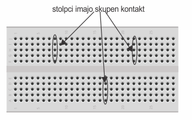
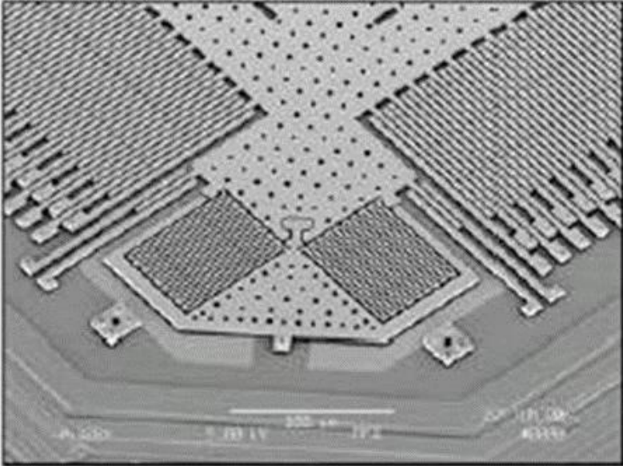

eEksperimenti so za vas, srednješolce in osnovnošolce, ki si želite vstopiti v svet merjenja električnih signalov in se seznaniti z načinom dela elektrotehnikov, raziskovalcev, znanstvenikov. Ob izvajanju eksperimentov boste uporabljali merilno opremo, ki jo uporabljamo tudi mi, raziskovalci in študentje na Fakulteti za elektrotehniko Univerze v Ljubljani. Enako merilno opremo uporabljajo v ustanovah in podjetjih v Sloveniji in po svetu.
Menimo, da je rokovanje z merilno opremo najbolj neposreden način, da pridete v stik s praktičnim delom. Na enostaven in voden način – korak po koraku, vendar zelo usmerjeno proti cilju. Ob vodenih razlagah o osnovnih električnih pojavih, ob pojasnilih o uporabljeni merilni opremi in ob usmerjenem vodenju. In to na način, da si težavnostni nivo izberete sami.
Kako začeti?
Od začetka. V zavihku Osnovni pojmi se boste seznanili z osnovnimi pojmi, ki vam bodo omogočali lažje razumevanje eksperimentov in načinov merjenja. Na kratko bomo pojasnili kaj je električni naboj, kako je povezan z električnim tokom in kako z napetostjo. Seznanili se boste z osnovnimi električnimi veličinami, njihovimi simboli in z merskimi enotami skupaj s predponami, ki določajo njihove vrednosti. Spoznali boste načine merjenja električnih signalov.
V zavihku Merilni sistem se boste spoznali z računalniško-merilno kartico Red Pitaya ter načinom njene uporabe.
Eksperimenti so osrednji del platforme. Vsak eksperiment vsebuje osnovno razlago, način priprave eksperimenta ter način izvajanja. Težavnostno stopnjo si boste izbrali sami glede na vaše predhodne izkušnje s povezovanjem elementov, merilno kartico in z izvajanjem meritev.
Če jih še nimate, boste morda izbrali lažji način, prilagojen začetnikom. Kasneje se lahko preskusite v zahtevnejšem načinu izvajanja. Verjamemo, da je tak način učenja najprimernejši. Pripeljal vas bo do konkretnih znanj, ki vam bodo v veselje in ponos. Morda vam celo nakažejo poklicno pot.
V zavihku Uporaba senzorjev smo pripravili primere aplikacij za delo z najrazličnejšimi senzorji. Tu ni vodenih eksperimentov. Eksperimente si boste zamislili sami. Veseli bomo vaših lastnih projektov, ki jih boste pripravili s pomočjo gotovih aplikacij.
V zavihku Aplikacije so zbrane vse aplikacije, pripravljene v okviru platforme. To so namensko prilagojeni merilni inštrumenti, ki se izvajajo na računalniško-merilni kartici Red Pitaja, upravljamo pa jih preko spletne strani.
Zadnji zavihek, O eEksperimentih, je namenjen podrobnejši predstavitvi ideje platforme, predstavitvi izvajalcev ter povabilu k sodelovanju.
eEksperimenti uporabljajo računalniško-merilno kartico za zajem in generiranje električnih signalov. Pri razlagi eksperimentov bomo pogosto uporabljali pojme, kot so napetost, tok, moč, energija, osciloskop, signal, perioda, frekvenca in druge. Za boljše razumevanje vseh pojmov smo pripravili razlage v obliki kratkih video posnetkov. Na koncu vsakega posnetka je na voljo kratek kviz. Označite pravilne odgovore in na koncu kviza kliknite Preveri odgovore. Pri pravilnih odgovorih se bo prikazala zelena kljukica, pri napačnih pa se bodo pravilni odgovori obarvali zeleno.
Električni naboj in električni viri
Ta video je namenjen razlagi pojmov kot so elektron, proton, nevtron, električni naboj in sila med naboji. Tu se »skriva« temelj električnih pojavov. Kratko 6 minutno razlago bo podal prof. dr. Dejan Križaj.
4. Katero mersko enoto uporabimo za označevanje velikosti toka?
5. V kateri smeri potujejo elektroni?
6. Kdaj lahko teče električni tok?
7. Kdaj žarnica bolj gori?
8. Kdaj žarnica bolj gori?
Napetost
Napetost je povezana je z energijo, ta pa z delom in potem z električnim tokom kot posledico. Če želite opraviti neko delo potrebujete energijo. To v elektrotehniki enačimo z električno napetostjo med razdruženimi naboji. Bolj natančno razlago podajamo v kratkem posnetku.
1. Električna napetost je posledica: (poišči najustreznejši odgovor)
2. Označi pravilno:
3. Merska enota za napetost je:
4. Akumulator je:
5. Kaj je elektrostatska sila?
6. Kaj je električni generator in kaj je njegov namen?
Predstavitev osnovnih merilnih inštrumentov
Z ampermetrom merimo tok, z voltmetrom napetost, z osciloskopom pa opazujemo časovne spremembe električnih signalov. Več pa v posnetku.
Predstavitev Red Pitaje
Zumret Topčagić iz podjetja RedPitaya pojasnjuje osnovne elemente računalniško-merilne kartice Red Pitaya, načine priklopa, način zajemanja in generiranja podatkov. Pojme kot so FPGA, 125 MS/s, 14 bitov pa bo razložil prof. dr. Dejan Križaj.
3. Za hitro ustvarjanje in zajemanje napetostnih signalov je tudi najzmogljivejši računalnik prepočasen. Zato pri Red Pitayi to funkcijo pod nadzorom računalnika opravlja:
4. Čemu služijo hladilna rebra na Red Pitayi?
5. Računalnik na Red Pitayi uporablja napredno tehnologijo, zato se zna:
6. Hitrost zajemanja in generiranja signalov s hitrostjo 125 MS/s pomeni:
7. Red Pitaya zajema in generira signale z natančnostjo 14 bitov. To pomeni:
8. Signali, katerim se vrednost poljubno spreminja s časom, so:
9. Signali, ki imajo le dva napetostna nivoja, so:
10. Vsi računalniki temeljijo na digitalnih signalih. Številke, črke, slike, video posnetke in zvok prevedejo v:
11. Red Pitaya omogoča napajanje preko:
Si lahko zapomnite pojme označene na spodnji sliki? Ob pritisku na gumb »Kaj je na sliki?« se bodo pojmi nadomestili s črkami, vi pa se boste pomerili v poznavanju Red Pitaye in njenih razširitvenih naprav.
3. Za hitro ustvarjanje in zajemanje napetostnih signalov je tudi najzmogljivejši računalnik prepočasen. Zato pri Red Pitayi to funkcijo pod nadzorom računalnika opravlja:
4. Čemu služijo hladilna rebra na Red Pitayi?
5. Računalnik na Red Pitayi uporablja napredno tehnologijo, zato se zna:
6. Signali, katerim se vrednost poljubno spreminja s časom, so:
7. Signali, ki imajo le dva napetostna nivoja, so:
8. Vsi računalniki temeljijo na digitalnih signalih. Številke, črke, slike, video posnetke in zvok prevedejo v:
9. Red Pitaya omogoča napajanje preko:
Si lahko zapomnite pojme označene na spodnji sliki? Ob pritisku na gumb »Kaj je na sliki?« se bodo pojmi nadomestili s črkami, vi pa se boste pomerili v poznavanju Red Pitaye in njenih razširitvenih naprav.
4. Računalnik na Red Pitayi uporablja napredno tehnologijo, zato se zna:
5. Signali, katerim se vrednost poljubno spreminja s časom, so:
6. Signali, ki imajo le dva napetostna nivoja, so:
7. Vsi računalniki temeljijo na digitalnih signalih. Številke, črke, slike, video posnetke in zvok prevedejo v:
8. Red Pitaya omogoča napajanje preko:
Si lahko zapomnite pojme označene na spodnji sliki? Ob pritisku na gumb »Kaj je na sliki?« se bodo pojmi nadomestili s črkami, vi pa se boste pomerili v poznavanju Red Pitaye in njenih razširitvenih naprav.
Če uporabljate eEksperimente, je verjetno spominska kartica že ustrezno pripravljena in lahko preskočite ta korak.
Če želite obnoviti ali nadgraditi verzijo, preverite najnovejšo verzijo na strani eEksperimenti.si.
Pripravite spominsko kartico
1. Prenesite namestitvene datoteke
2. Preneseno odzipajte in kopirajte na kartico. Kako?
3. Vstavite kartico v Red Pitayo
Red Pitayo priključite na napajanje in jo povežite z računalnikom
Lokalna omrežna povezava
1. Priključite omrežni kabel in napajalnik (5V/2A).
2. V spodnje okence vpišite MAC naslov, ki je zapisan na elementu za priklop mrežne kartice (glej sliko). Kliknite "Poveži", da pridobite lokalni IP vaše Red Pitaye.
WI-FI dostopna dočka
1. Vstavite brezžični ključek in priključite napajalnik (5V/2A).
2. Računalnik povežite z omrežjem "redpitaya". Geslo je "redpitaya".
3. Povežite RedPitayo z računalnikom s pomočjo internetnega brskalnika, tako, da vpišete sledeči IP naslov: 192.168.128.1
Direktna omrežna povezava
1. Priključite omrežni kabel in napajalnik (5V/2A).
2. Nastavite omrežno povezavo na IP naslov 192.168.1.101 in masko podomrežja na 255.255.255.0. Kako?
3. Povežite RedPitayo z računalnikom s pomočjo internetnega brskalnika, tako, da vpišete sledeči IP naslov: 192.168.1.100
Red Pitaya kot Osciloskop in signalni generator
Osciloskop in signalni generator sta osnovni napravi za razvoj in raziskavo električnih naprav.
S signalnim generatorjem lahko proizvedemo električne signale različnih oblik, osciloskop pa omogoča grafični
prikaz časovnih sprememb več napetostnih signalov hkrati. V eksperimentu bomo pokazali, kako se Red Pitayo uporabo kot
signalni generator in osciloskop. Tako boste pripravljeni za nadaljnje delo.
V eksperimentu boste opazovali električni tok skozi žarnico ob priklopu žarnice na električno napetost.
Zanimalo nas bo, če se tok s časom spreminja. Poleg žarnice boste postavili še sončno celico, ki bo omogočala merjenje osvetlitve,
ki jo povzroča svetloba žarnice. Tako bomo lahko hkrati merili tok skozi žarnico in osvetlitev, ki jo žarnica povzroča.
Sončne celice so verjetno naš osnovni vir energije v bodočnosti. Zato je njihovo delovanje in uporaba še posebno zanimivo.
Z eksperimentom boste raziskali delovanje sončnih celic in ugotavljali, kako jo priklopiti na porabnika,
da bomo iz nje lahko črpali čim več električne energije.
Lastnosti elementov vezij (z aplikacijo: Tok + Napetost)
V eksperimentu se boste seznanili z osnovnimi elementi električnih vezij kot so upor, kondenzator, tuljava ter tudi z enim od tako imenovanih nelinearnih
elementov – diodo. Opazovali boste tok in napetost na elementih, ko jih priključite na vir izmenične napetosti sinusne, trikotne ali pa pravokotne oblike.
V eksperimentu se boste seznanili z osnovnimi elementi električnih vezij kot so upor, kondenzator, tuljava ter tudi z enim od tako imenovanih nelinearnih elementov – diodo.
Opazovali boste tok in napetost na elementih, ko jih priključite na vir izmenične napetosti sinusne, trikotne ali pa pravokotne oblike.
Za potrebe eksperimenta boste izhod signalnega generatorja, ki se nahaja na hitrem izhodu 1, povezali z vhodnim kanalom
osciloskopa na hitrem vhodu 1. Uporabili boste priložen koaksialen kabel. V spletnem brskalniku boste zagnali aplikacijo
Osciloskop in signalni generator. Delo z inštrumentoma poteka preko kontrolnih elementov aplikacije (gumbov ter vnosnih,
potrditvenih in izbirnih polj). V prvem delu eksperimenta vas bomo vodili skozi osnovne funkcionalnosti inštrumentov. Po
razlagi ste na vrsti vi, da jih nastavite in preizkusite.
Sledi eksperiment, kjer boste s pomočjo osciloskopa izmerili osnovne parametre štirih vnaprej pripravljenih vzorčnih signalov.
V lažjem načinu izvajanja boste imeli na voljo vse funkcije osciloskopa, tudi samodejno nastavitev merilnih območij in funkcijo
prikaza signalnih parametrov. Srednje zahteven način dovoljuje uporabo samodejnih nastavitev merilnih območij, ne pa tudi prikaza
signalnih parametrov. V težjem načinu izvajanja sta obe funkcionalnosti onemogočeni.
Način izvajanja eksperimenta
Zahtevnejši način izvajanja
Za zahtevnejši način izvajanja eksperimenta, kjer se boste naučili uporabljati vse funkcije osciloskopa in signalnega
generatorja ob izčrpni razlagi, kliknite na to povezavo.
Srednje zahteven način izvajanja
Za srednje zahteven način izvajanja, kjer se boste naučili uporabljati osnovne in napredne funkcije osciloskopa in signalnega
generatorja ob okrnjeni razlagi, kliknite na to povezavo.
Lažji način izvajanja
Za enostavni način izvajanja, kjer se boste naučili uporabljati osnovne funkcije osciloskopa in signalnega generatorja ob preprosti
razlagi, kliknite na to povezavo.
Dodatni eksperimenti
S pomočjo aplikacije in lekcij 1 in 2 ste se naučili uporabljati osciloskop in signalni generator. Sedaj si lahko zamislimo še druge poskuse:
Signalni generator omogoča ustvarjanje signalov poljubnih oblik. V signalni generator uvozite datoteko »batman.csv«, ga poženite in opišite signal.
Kreirajte svoj lasten signal. Naredite CSV datoteko in signal prikažite na osciloskopu. Primer kreiranja CSV datoteke najdete na
tej povezavi (v angleškem jeziku).
Za radovedne
Osciloskop je izumil Jonathan Zenneck leta 1899, kar sovpada z raziskavami elekričnih signalov.
S sodobnimi osciloskopi lahko zaznavamo spremembe napetosti, ki se zgodijo v manj kot 0,00000000005 sekunde, kar zapišemo tudi kot 5∙10-11 s. Za primerjavo, en zamah mušjega krila traja 20.000.000 krat dlje.
Najdražji in najzmogljivejši komercialni osciloskop na svetu je Agilent DSA-X 9620Q. Stane kar 450.000 eurov. Je 620 krat hitrejši od sodobnih osciloskopov namenjenih domači uporabi.
Zahtevnejši način izvajanja
Merilna shema
Osnovni priključki Red Pitaye so prikazani na spodnji sliki. Uporabite priložen koaksialen kabel, s katerim povežete hitri izhod 1 s hitrim vhodom 1.
ČE STE POVEZALI HITRI IZHOD 1 S HITRIM VHODOM 1, LAHKO NADALJUJETE S PRIKLJUČITVIJO RED PITAJE NA NAPAJANJE IN ZAGONOM APLIKACIJE.
Aplikacijo Signalni generator in Osciloskop zaženete s klikom na ikono okna eEksperimenti
1. V oknu eEksperimenti izberite aplikacijo Signalni generator in Osciloskop.
Z izbiro zavihka Signalni generator v pojavnem oknu aplikacije se odpre spustno okno s kontrolami inštrumenta. Red Pitaya omogoča sočasno uporabo dveh
signalnih generatorjev. Klik na potrditveno polje Kanal 1 vklopi ali izklopi signalni generator na hitrem izhodu 1. Klik na potrditveno polje Kanal 2
vklopi ali izklopi signalni generator na hitrem izhodu 2.
2. Omogočite signalni generator 1 na hitrem izhodu 1 s potrditvijo polja Kanal 1.
Za nastavitev parametrov generatorjev sta na voljo dve izbirni polji Oblika izhodnega signala / Način proženja ter tri vnosna polja Vršna napetost / Frekvenca / Enosmerna komponenta.
Osnovne oblike signalov, ki so na voljo v izbirnem polju Oblika izhodnega signala, že poznate. Red Pitaya omogoča tudi ustvarjanje signalov poljubnih oblik. Funkcionalnost zaženete
z gumbom Iz datoteke. Odpre se novo pojavno okno, kjer s pritiskom na gumb Izberi datoteko označite pot do datoteke z opisom signala. S potrditvijo gumba Naloži se opis signala prenese
na merilno kartico.
3. V izbirnem polju Oblika izhodnega signala izberite sinusno obliko.
V vnosno polje Vršna napetost vpisujemo želeno vršno napetost generiranega signala. Vršna napetost je razlika med največjo in najmanjšo vrednostjo napetosti.
4. V vnosno polje Vršna napetost vpišite vrednost »1«. Vpisano potrdite s klikom na potrditveni gumb. Vršna napetost 1 V pomeni, da bo najmanjša vrednost generiranega signala -0.5 V,
največja pa +0.5 V. To velja le, če signal ne vsebuje enosmerne napetostne komponente.
Pomni: Najvišja vršna vrednost napetosti, ki jo red Pitaya omogoča na izhodu, je 2 V.
V vnosno polje Frekvenca vpisujemo frekvenco signala. Frekvenca nam pove, kolikokrat na sekundo se ponovi osnovna oblika signala. Osnovna oblika sinusnega signala je prikazana na spodnji sliki:
5. V vnosno polje Frekvenca vpišite vrednost »2000«. Vpisano potrdite s klikom na potrditveni gumb. Frekvenca 2000 Hz pomeni, da se bo osnovna oblika sinusnega signala ponovila dva tisočkrat na sekundo.
V vnosno polje Enosmerna komponenta vpisujemo želeno vrednost enosmerne napetostne komponente. Ta se prišteje generiranemu signalu.
6. V vnosno polje Enosmerna komponenta vpišite vrednost »0«. Vpisano potrdite s klikom na potrditveni gumb.
V izbirnem polju Način proženja izbirate med možnostmi Enkratno, Ponavljajoče in Proženje z zunanjim signalom.
Izbira vpliva na način generiranja signala. Izbira Enkratnega proženja povzroči, da se ob pritisku na gumb generira signal osnovne oblike, nakar se generator ustavi.
Ponavljajoče proženje generira ponavljajoč, periodičen signal. Generiranje signala ene periode lahko prožimo tudi z zunanjim signalom, ki ga pripeljemo na Red Pitayo.
7. V izbirnem polju izberite možnost Ponavljajoče, s čimer sprožite generiranje periodičnega signala na hitrem vhodu 1.
Če vas begajo številne funkcionalnosti inštrumenta, lahko še vedno preidete na enostaven način. Tam opišemo le osnovne funkcije inštrumentov in podamo poenostavljeno razlago.
Lekcija 2: Uporaba osciloskopa
Generiran signal se boste naučili prikazati na osciloskopu in odčitati njegove parametre.
Za hiter prikaz signala je na voljo zavihek Samodejna nastavitev merilnih območij. Klik na zavihek ponudi dodatne možnosti v obliki spustnega seznama. S klikom na
Napetostnega in časovnega bo aplikacija samodejno prilagodila napetostno in časovno merilno območje in umirila prikaz signala. Velja opozoriti, da samodejna prilagoditev ni vedno uspešna.
Če želite, da program prilagodi le napetostno merilno območje, časovnega pa ne, izberite opcijo Časovnega.
S klikom na Ponastavi se nastavita privzeti merilni območji (časovno merilno območje med 0 in 130 µs in napetostno merilno območje +/-1 V za LV nastavitev ali +/-20 V za HV nastavitev ojačenja).
S pritiskom na preklopni gumb Kanal 1 omogočimo ali onemogočimo prikaz signala na hitrem vhodu 1. S pritiskom na preklopni gumb Kanal 2 omogočimo ali onemogočimo prikaz signala na hitrem vhodu 2.
1. Onemogočite prikaz signala na hitrem vhodu 2.
Nastavitve proženja najdete pod zavihkom Proženje.
Z nastavitvijo proženja dosežemo, da se osnovna oblika ponavljajočega signala riše ena čez drugo, kar ustvari videz mirujoče slike. To nam olajša opazovanje signala in odčitavanje njegovih parametrov.
Začetek risanja osnovne oblike določimo z nivojem praga proženja.
Prag proženja vpisujemo v vnosno polje Prag proženja, nastavljamo z zelenim drsnikom ali pa na prožilni vhod Red Pitaye pripeljemo zunanji prožilni signal v obliki enosmerne napetosti.
V izbirnem polju izberemo izvor prožilnega signala izberemo enega od kanalov osciloskopa. Z izbiro opcije Zunanji izvor omogočimo proženje z zunanjim signalom.
2. V izbirnem polju Izvor prožilnega signala pod zavihkom Proženje izberite Kanal 1. Način proženja nastavite na Običajno. V vnosno polje Prag proženja vpišite »0,2«. S tem ste nastavili prag proženja
na 0,2 V. Spreminjajte prag proženja z zelenim drsnikom, ki ga najdete na desni strani grafičnega okna in opazujte sliko signala.
Merilni območji lahko prilagajamo z vrtljivim kolescem računalniške miške ali s kontrolnima gumboma in .
3. Kazalec miške postavite na graf. Opazujte, kako se prilagajata merilni območji, ko sučete kolesce na miški. Raziščite funkcionalnost gumba .
Za ročno nastavitev merilnih območij je na voljo spustno kontrolno okno, ki ga odpremo s klikom na zavihek Ročna nastavitev merilnih območij. Tu nastavljamo širino in premik merilnih območij.
4. Širino časovnega merilnega območja nastavite na nastavite na 1000 µs, napetostno pa na 2V. Z gumbi za premik merilnih območij uredite prikaz signala na zaslonu. Merilni območji lahko premikate tudi z miško.
Kliknite na gumb . Z miškinim kazalcem se postavite na sliko signala, pritisnite levo tipko, jo zadržite in premaknite kazalec miške.
S klikom na zavihek Prikaz signalnih parametrov se odpre spustno okno z izračunanimi parametri signalov na kanalih 1 in 2. Pojme Najmanjša napetost, Največja napetost, Vršna napetost
in Frekvenca že poznate. Nova sta pojma Perioda in Povprečna napetost. Perioda je čas, v katerem se časovni potek napetosti periodičnega signala ponovi. Povprečna napetost je določena
s površino pod krivuljo signala v eni periodi deljena s periodo.
5. S pomočjo zavihka Prikaz signalnih parametrov odčitajte parametre nastavljenega signala. Za izračun frekvence in periode bo morda potrebno spremeniti še nivo prožilnega praga, najlaže z zelenim drsnikom.
Pod zavihkom Merilni sondi so nastavitve za uparjanje merilnih sond.
Pri merjenju enosmernih signalov in izmeničnih signalov nizkih frekvenc predstavljajo merilne sonde brez slabljenja visoko upornost. Pri merjenju signalov visokih frekvenc
kapacitivnost koaksialnega kabla bremeni izvor signala. Da se izognemo kapacitivnemu bremenu, uporabljamo sondo s slabljenjem, kjer se vhodna impedanca zviša za enak faktor,
kot znaša slabljenje signala (upornost se poveča, kapacitivnost se zmanjša).
Faktor slabljenja nastavimo s preklopnim drsnim stikalom, ki ga najdemo na merilnih sondah. Enak faktor nastavimo v izbirnem polju Faktor slabljenja v spustnem oknu zavihka Merilni sondi.
Za merjenje signalov vršne napetosti do 2 V preklopimo stikali vhodov Red Pitaye v lego LV (nizka napetost – Low Voltage). Stikali najdemo na vezju ob priključkih za hitri vhod 1 in
hitri vhod 2. Za merjenje signalov vršne napetosti do 40 V preklopimo stikali vhodov Red Pitaye v lego HV (nizka visoka napetost – High Voltage). Enako vrednost nastavimo v izbirnem polju Nastavitve ojačenja.
Eksperiment
V zavihku Vzorčni signali so štirje gumbi. S klikom na gumb sprožite generiranje prednastavljenega signala. Potrdite polje Kanal 1, s čimer omogočite hitri izhod 1 Red Pitaje.
V zahtevnejšem načinu izvajanja funkciji Samodejnih nastavitev merilnih območij in Prikaz signalnih parametrov
nista na voljo, zato boste parametre signalov odčitali iz grafičnega prikaza. Če vam ne uspe, lahko še vedno izberete enostavnejši način izvajanja.
Kako določiti enosmerno komponento signala?
Enosmerna komponenta signala je vrednost enosmerne napetosti,
ki se prišteje osnovni obliki izmeničnega signala. V grafičnem prikazu je to odmik osnovne oblike signala navzgor ali navzdol.
Kako določiti frekvenco signala?
Frekvenco signala boste izračunali. Iz slike signala boste razbrali čas, v katerem se osnovna oblika signala ponovi.
Temu času rečemo tudi perioda in ter ga označimo s T. Frekvenco signala izračunate po enačbi:
Kaj predstavljata simbola m in kaj µ?
Simbola m in µ sta predponi merskih enot. Velja:
1 ms = 0.001 s
1 µs = 0.000001 s
Odčitek periode 100 µs tako pomeni 100 * 0.000001 s, kar znaša 0.0001 s.
Kako določiti amplitudo signala?
Amplitudo signala boste izračunali. Iz slike signala boste razbrali največjo in najmanjšo vrednost signala.
Razlika med največjo in najmanjšo vrednostjo signala je vršna napetost. Amplituda signala je polovica vršne napetosti.
Aplikacijo Signalni generator in Osciloskop zaženete s klikom na ikono okna eEksperimenti
1. V oknu eEksperimenti izberite aplikacijo Signalni generator in Osciloskop.
Z izbiro zavihka Signalni generator v pojavnem oknu aplikacije se odpre spustno okno s
kontrolami inštrumenta. Red Pitaya omogoča sočasno uporabo dveh signalnih generatorjev.
Klik na potrditveno polje Kanal 1 vklopi ali izklopi signalni generator na hitrem
izhodu 1. Klik na potrditveno polje Kanal 2 vklopi ali izklopi signalni generator na
hitrem izhodu 2.
2. Omogočite signalni generator 1 na hitrem izhodu 1 s potrditvijo polja Kanal 1.
Za nastavitev parametrov generatorjev sta na voljo dve izbirni polji Oblika izhodnega signala / Način proženja ter tri vnosna polja Vršna amplituda / Frekvenca / Enosmerna komponenta.
Osnovne oblike signalov, ki so na voljo v izbirnem polju Oblika izhodnega signala, že poznate.
3. V izbirnem polju Oblika izhodnega signala izberite sinusno obliko.
V vnosno polje Vršna napetost vpisujemo želeno vršno napetost generiranega signala. Vršna napetost je razlika med največjo in najmanjšo vrednostjo napetosti.
4. V vnosno polje Vršna napetost vpišite vrednost »1«. Vpisano potrdite s klikom na potrditveni gumb. Vršna napetost 1 V pomeni, da bo najmanjša vrednost generiranega signala
-0.5 V, največja pa +0.5 V. To velja le, če signal ne vsebuje enosmerne napetostne komponente. Pomni: Najvišja vršna vrednost napetosti, ki jo red Pitaya omogoča
na izhodu, je 2 V.
V vnosno polje Frekvenca vpisujemo frekvenco signala. Frekvenca nam pove, kolikokrat na sekundo se ponovi osnovna oblika signala. Osnovna oblika sinusnega signala je prikazana na spodnji sliki:
5. V vnosno polje Frekvenca vpišite vrednost »2000«. Vpisano potrdite s klikom na potrditveni gumb. Frekvenca 2000 Hz pomeni, da se bo osnovna oblika sinusnega signala ponovila dva tisočkrat na sekundo.
Če vas begajo številne funkcionalnosti inštrumenta, lahko še vedno preidete na enostaven način. Tam opišemo le osnovne funkcije inštrumentov in podamo poenostavljeno razlago.
Lekcija 2: Uporaba osciloskopa
Generiran signal se boste naučili prikazati na osciloskopu in odčitati njegove parametre.
Za hiter prikaz signala je na voljo zavihek Samodejna nastavitev merilnih območij. Klik na zavihek ponudi dodatne možnosti v obliki spustnega seznama. S klikom na
Napetostnega in časovnega bo aplikacija samodejno prilagodila napetostno in časovno merilno območje. Velja opozoriti, da samodejna prilagoditev ni vedno uspešna.
Če želite, da program prilagodi le napetostno merilno območje, časovnega pa ne, izberite opcijo Časovnega.
S klikom na Ponastavi se nastavita privzeti merilni območji.
Merilni območji lahko prilagajamo z vrtljivim kolescem računalniške miške ali s kontrolnima gumboma in .
1. V spustnem seznamu zavihka Samodejna nastavitev merilnih območij izberite opcijo Napetostnega in časovnega. S tem bo
aplikacija samodejno prilagodila napetostno in časovno merilno območje merjenemu signalu. Kazalec miške
postavite na graf. Opazujte, kako se prilagajata merilni območji, ko sučete kolesce na miški.
Za ročno nastavitev merilnih območij je na voljo spustno kontrolno okno, ki ga odpremo s klikom na zavihek Nastavitev merilnih območij.
Tu nastavimo širino, z opcijo Premik pa spodnji meji merilnih območij.
2. Širino časovnega merilnega območja nastavite na nastavite na 1000 µs, napetostno pa na 2V. Z gumbi za premik merilnih območij uredite prikaz signala na zaslonu. Merilni območji lahko premikate tudi z miško.
Kliknite na gumb . Z miškinim kazalcem se postavite na sliko signala, pritisnite levo tipko, jo zadržite in premaknite kazalec miške.
S klikom na zavihek Prikaz signalnih parametrov se razpre spustno okno z izračunanimi parametri signalov na kanalih 1 in 2.
Pojme Najmanjša napetost, Največja napetost, Vršna napetost in Frekvenca že poznate. Nova pojma sta Perioda in Povprečna napetost.
Perioda je čas, v katerem se časovni potek napetosti periodičnega signala ponovi. Povprečna napetost je določena s površino pod krivuljo signala v eni periodi deljena s periodo.
3. S pomočjo zavihka Prikaz signalnih parametrov odčitajte parametre nastavljenega signala.
Pri tem si lahko pomagate s funkcijo Samodejna prilagoditev merilnih območij / Napetostnega in časovnega.
Eksperiment
V zavihku Vzorčni signali so štirje gumbi. S klikom na gumb sprožite generiranje prednastavljenega signala. Potrdite polje Kanal 1, s čimer omogočite hitri izhod 1 Red Pitaje.
V srednje zahtevnem načinu izvajanja funkcija Prikaz signalnih parametrov ni na voljo, zato boste parametre signalov odčitali iz grafičnega prikaza. Če vam ne uspe, lahko še vedno izberete lažji način izvajanja.
Kako določiti amplitudo signala?
Amplitudo signala boste izračunali. Iz slike signala boste razbrali največjo in najmanjšo vrednost signala.
Razlika med največjo in najmanjšo vrednostjo signala je vršna napetost. Amplituda signala je polovica vršne napetosti.
Aplikacijo Signalni generator in Osciloskop zaženete s klikom na ikono v oknu eEksperimenti
1. V oknu eEksperimenti izberite aplikacijo Signalni generator in Osciloskop.
Z izbiro zavihka Signalni generator v pojavnem oknu aplikacije se odpre spustno okno s kontrolami
inštrumenta. Red Pitaya omogoča sočasno uporabo dveh signalnih generatorjev. Klik na potrditveno
polje Kanal 1 vklopi ali izklopi signalni generator na hitrem izhodu 1. Klik na potrditveno polje
Kanal 2 vklopi ali izklopi signalni generator na hitrem izhodu 2.
2. Omogočite signalni generator 1 na hitrem izhodu 1 s potrditvijo polja Kanal 1.
3. V izbirnem polju Oblika izhodnega signala izberite sinusno obliko.
V vnosno polje Vršna napetost vpisujemo želeno vršno napetost generiranega signala. Vršna napetost je razlika med največjo in najmanjšo vrednostjo napetosti.
4. V vnosno polje Vršna napetost vpišite vrednost »1«. Vpisano potrdite s klikom na potrditveni gumb.
V vnosno polje Frekvenca vpisujemo frekvenco signala. Frekvenca nam pove, kolikokrat na sekundo se ponovi osnovna oblika signala. Osnovna oblika sinusnega signala je prikazana na spodnji sliki:
5. V vnosno polje Frekvenca vpišite vrednost »2000«. Vpisano potrdite s klikom na potrditveni gumb. Frekvenca 2000 Hz pomeni, da se bo osnovna oblika sinusnega signala ponovila dva tisočkrat na sekundo.
Lekcija 2: Uporaba osciloskopa
Generiran signal se boste naučili prikazati na osciloskopu in odčitati njegove parametre.
Za hiter prikaz signala na zaslonu je na voljo funkcija Samodejna prilagoditev merilnih območij. Kliknete na zavihek Samodejna prilagoditev merilnih območij,
nakar izberete možnost napetostnega in časovnega. S pritiskom na gumb bo aplikacija samodejno prilagodila časovno in napetostno merilno območje. Velja opozoriti,
da samodejna prilagoditev ni vedno uspešna.
1. Izberite opcijo Samodejna prilagoditev merilnih območij za prikaz signala.
Merilni območji lahko prilagajamo z vrtljivim kolescem računalniške miške ali s kontrolnima gumboma in .
2. Kazalec miške postavite na graf. Opazujte, kako se prilagajata merilni območji, ko sučete kolesce na miški. Raziščite funkcionalnost gumba .
S klikom na zavihek Prikaz signalnih parametrov se odpre spustno okno z izračunanimi parametri signalov na kanalih 1 in 2. Pojme Najmanjša napetost, Največja napetost, Vršna napetost in Frekvenca že poznate.
Eksperiment
V zavihku Vzorčni signali so štirje gumbi. S klikom na gumb sprožite generiranje prednastavljenega signala. Potrdite polje Kanal 1. Uporabite funkcijo Samodejna prilagoditev merilnih območij za prikaz signala. V lažjem načinu vam bo v pomoč funkcija Prikaz signalnih parametrov.
Kako določiti amplitudo signala?
Amplitudo signala izračunate. V zavihku Prikaz signalnih parametrov se poleg ostalih
parametrov signala izračunava tudi vršna napetost. Amplituda signala je polovica vršne napetosti.
V eksperimentu boste opazovali električni tok skozi žarnico ob priklopu žarnice na električno napetost. Zanimalo nas bo, če se tok skozi žarnico s časom spreminja.
V neposredno bližino žarnice boste postavili tudi sončno celico ali fotodiodo, ki bo omogočala merjenje osvetlitve, ki jo povzroča svetloba žarnice. Zanimalo nas bo, kako
se osvetlitev spreminja s časom in tudi, ali se osvetlitev spreminja na enak način kot tok skozi žarnico.
Elementi, ki jih boste uporabili v eksperimentu so žarnica, vir napetosti (lahko na Red Pitaji ali pa zunanji vir, npr. baterija), fotodioda ali sončna celica in merilni upor.
Način izvajanja eksperimenta
Zahtevnejši način izvajanja
Za zahtevnejši način izvajanja eksperimenta, kjer je natančno razložena merilna shema in način priključitve Red Pitaye ne pa tudi konkretne povezave elementov na preskusni ploščici, kliknite na to povezavo.
Srednje zahteven način izvajanja
Za srednje zahteven način izvajanja eksperimenta, ki vključuje tudi natančen opis povezav elementov na preskusni ploščici ter povezav z Red Pitayo, kliknite na to povezavo.
Lažji način izvajanja
V enostavnem načinu izvajanja so povezave že narejene, potrebna je le priključitev Red Pitaye. Povezava.
Dodatni eksperimenti iz vklopa žarnice
Preizkusite, kako svetijo različna svetila, če so priključena na izmenično napetost. Vir napetosti je pri tem lahko kar iz vtičnice, torej opazujemo različna svetila,
ki jih uporabljamo za osvetljevanje prostorov. S senzorjem svetilnosti opazujte svetlobni tok, ki ga oddajajo različne sijalke (žarnice), priključene na omrežno napetost.
Opazujte žarnico na žarilno nitko, navadno neonsko luč in varčno (CFL) žarnico.
Najprej opazujte žarnico na žarilno nitko in poskušajte odgovoriti, zakaj je oblika signala iz senzorja taka, kot jo vidite. Zanimivo je tudi poiskati frekvenco nihanja svetlobe in poiskati razlog zakaj je tolikšna.
Opazujte tudi, kako svetijo žarnice, ki ne vsebujejo žarilne nitke – npr fluorescentne žarnice.
Za eksperiment povežemo v tokokrog vir, žarnico in stikalo kot kaže spodnja slika. Če so vam ti elementi in način prikaza tuji, vam svetujemo, da si izberete lažji način reševanja, kjer bodo elementi električne sheme nekoliko bolj podrobno razloženi.
Kot vir napetosti bomo namesto baterije uporabili kar priključek na Red Pitaji, ki ima na sponkah napetost 12 V. Prav tako bomo Red Pitajo uporabili za merjenje toka. Ker pa Red Pitaya meri le napetosti, bomo merjenje toka izvedli s pomočjo merjenja napetost na merilnem uporu.
Merilna shema
V merilni shemi na sliki uporabimo Vhod 1 za merjenje toka skozi žarnico. Tok, ki teče skozi merilni upor povzroči na njem padec napetosti, ki jo lahko neposredno merimo z RedPitayo. Odvisnost med tokom in napetostjo na električnem uporu je preprosta, matematično jo zapišemo z enačbo U=R*I, kjer je U napetost na uporu ( v voltih), R upornost (v ohmih) in I tok (v amperih). Če poznamo merilni upor lahko torej tok izračunamo s pomočjo enačbe I=U/R.
(Pitaja meri napetost v območji 0 do 1 V, tipične vrednosti toka, ki jih pričakujemo pa so ***, zato za merjenje toka uporabimo upor velikosti Rmer1=***)
Kot merilnik svetlobe, ki jo oddaja žarnica bomo oziroma osvetljenosti lahko uporabimo kar sončno celico iz drugega eksperimenta in to med kontaktoma 3 in 4, lahko pa uporabimo tudi fotodiodo. Svetloba, ki jo oddaja žarnica v sončni celici ali fotodiodi povzroči premike elektronov in če jo priključimo na električni upor, bo v tokokrogu stekel električni tok, katerega velikost je odvisna od osvetljenosti.
Priključki na Red Pitaji, ki jih bomo uporabili so prikazani na spodnji sliki. Tok skozi žarnico bomo merili z merjenjem napetosti na uporu Rmer1, ki ga priključimo na Vhod 1 Red Pitaje, osvetljenost pa bomo merili z merjenjem toka priključenega na Vhod 2. Uporabite priložene vezice in preskusno ploščico in z njihovo pomočjo realizirajte merilno shemo . Namesto baterije priklopite + sponko vira na priključek + 12 V na razširitveni plošči, ki je nad Red Pitajo (poiščite pravilno sponko na sliki spodaj), negativno sponko pa na 0 V oziroma poljubno GND sponko.
ČE STE ZVEZALI VSE ELEMENTE VEZJA IN JIH POVEZALI Z RED PITAJO, LAHKO NADALJUJETE S PRIKLJUČITVIJO RED PITAJE NA NAPAJANJE IN ZAGONOM APLIKACIJE.
Če ste povezali vse elemente po merilni shemi, vzpostavite računalniško-merilno kartico Red Pitajo, kot je opisano na spletni strani Zagon Red Pitaye. Poženite aplikacijo eŽarnica in sledite navodilom za izvedbo meritev. Če imate težave z zagonom Red Pitaje, vam bodo pomagala dodatna navodila oziroma odgovori na pogosta vprašanja.
ČE STE USPEŠNO PRIKLJUČILI RED PITAJO IN ZAGNALI APLIKACIJO eSONČNA_CELICA.
Navodila za izvajanje meritev
1. Poskus: Opazovanje signala iz senzorja svetlobe
Ob vklopu žarnice na napajanje boste na grafu opazili signal iz senzorja svetlobe.
V aplikaciji opazujte signal iz senzorja svetlobe ob priklopu in izklopu žarnice z napajanja. Nastavite ustrezna področja, da boste opazili prehodni pojav – os x (časovna os) naj bo v velikostnem razredu 1 sekunde. a) Ugotovite, kako po vklopu narašča svetilnost žarnice. b) Odčitajte, koliko časa traja, da žarnica doseže polno svetilnost.
2. Poskus: Opazovanje toka skozi žarnico
V aplikaciji vklopite merjenje toka in ponovno s stikalom vklopite žarnico. Tokrat opazujte tok skozi žarnico in opišite, kako se spreminja.
3. Poskus: Opazovanje toka skozi žarnico in signala iz senzorja svetlobe hkrati
Sedaj vklopite opazovanje tako toka skozi žarnico kot tudi svetilnosti s fotodiodo ali sončno celico. Ponovite vklop žarnice in opazujte potek, še posebno v smislu primerjave hitrosti spreminjanja toka in svetilnosti.
4. Poskus: Opazovanje toka skozi LED diodo in signala iz senzorja svetlobe hkrati.
Ponovite poskus 3 pri čemer zamenjajte žarnico z žarilno nitko z malo LED svetilko.
Po opravljenih meritvah poskusite odgovoriti na spodnja vprašanja:
Pravilno označi elemente vezja (upor, ...)
Kaj je električni tokokrog?
Kaj je električna shema?
Kako žarnica sveti, ko nanjo priključimo električno napetost?
Žarnica zasveti v trenutku
Žarnica nekaj časa ne oddaja nobene svetlobe, potem pa prične svetiti vedno bolj dokler ne doseže maksimalne svetilnosti
Ker je tok skozi žarnico ob vklopu največji, žarnica najprej močno zasveti, in med tem ko tok skozi žarnico zaradi višanja upornosti žičke pada prične padati svetilnost, ki se končno ustali pri končni svetilnosti
Kaj se dogaja z žarnico, ko izključimo tok skozi žarnico?
Ugasne v trenutku
Počasi ugaša
Kakšne oblike je tok skozi žarnico ob priklopu.
Hipoma naraste do končne vrednosti
Se povečuje do določene vrednosti
Se zmanjšuje do določene vrednosti
Se hipoma poveča do maksimalne vrednosti in potem pade do končne vrednosti
Kako žarnica sveti, ko jo priključimo na izmenični tok?
Žarnica utripa
Žarnica sveti konstantno
Žarnica malo utripa
Zakaj je oblika toka taka, kot si jo izmeril? (lahko več pravilnih odgovorov)
Ker je žarnica okrogle oblike
Ker ima žarnica žarilno nitko, ki se mora najprej segreti
Ker se žarilni nitki s segrevanje povečuje električna upornost
Ker se žarilni nitki s segrevanje zmanjšuje električna upornost
V primerjavi z žarnico na žarilno nitko je čas do polne osvetlitve LED svetilke:
Počasnejši
Hitrejši
Srednje zahteven način izvajanja
Opis vezave elementov
Za eksperiment povežemo v tokokrog vir, žarnico in stikalo. Ti predstavljajo elemente vezja, povezave med elementi vezja pa so prevodne žičke, ki med sabo povezujejo te elemente. Nastalo bo preprosto vezje, ki je prikazano tudi na spodnji sliki levo: vir predstavlja slika baterije, žarnico slika žarnice in stikalo slika stikala. Posamezne žice med sponkami elementov pa predstavljajo črte.
Da smo pri risanju načrtov vezij učinkovitejši, elektroinženirji posamezne slike elementov vezja nadomestimo s simboli. Tako nam baterija predstavlja simbol za vir, žarnico simbol žarnice in stikalo simbol stikala (slika desno). Posamezne povezave v vezju pa še vedno ostajajo črte, s katerimi povezujemo posamezne sponke elementov. Pri nadaljnjih eksperimentih bomo uporabili take merilne električne sheme, zato se je potrebno seznaniti s pomeni posameznih simbolov.
Kot vir napetosti bomo namesto baterije uporabili kar priključek na Red Pitaji, ki ima na sponkah napetost 12 V. Prav tako bomo Red Pitajo uporabili za merjenje toka. Ker pa Red Pitaya meri le napetosti, bomo merjenje toka izvedli s pomočjo merjenja napetost na merilnem uporu, ki ga bomo vključili v vezje kot prikazuje spodnja slika. Tok, ki teče skozi merilni upor povzroči na njem padec napetosti, ki jo lahko neposredno merimo z RedPitayo. Odvisnost med tokom in napetostjo na električnem uporu je preprosta, matematično jo zapišemo z enačbo U=R*I, kjer je U napetost na uporu ( v voltih), R upornost (v ohmih) in I tok (v amperih). Če poznamo merilni upor lahko torej tok izračunamo s pomočjo enačbe I=U/R.
(Pitaja meri napetost v območji 0 do 1 V, tipične vrednosti toka, ki jih pričakujemo pa so ***, zato za merjenje toka uporabimo upor velikosti ***)
Merilna shema
Kot merilnik svetlobe, ki jo oddaja žarnica bomo oziroma osvetljenosti lahko uporabimo kar sončno celico iz drugega eksperimenta in to med kontaktoma 3 in 4, lahko pa uporabimo tudi fotodiodo. Svetloba, ki jo oddaja žarnica v sončni celici ali fotodiodi povzroči premike elektronov in če jo priključimo na električni upor, bo v tokokrogu stekel električni tok, katerega velikost je odvisna od osvetljenosti.
Na spodnji sliki je prikazana električna merilna shema priključitve žarnice na napajanje na razširitveni plošči priključeni na Red Pitajo. Pri tem eksperimentu bomo uporabili razširitveno ploščo le za 12 V napajanje, sicer pa je na njej vrsto dodatnih priključkov, ki omogočajo raznovrstne priključitve elementov. (Bolj natančen opis je v Zahtevnejšem načinu izvajanja).
Poleg merjenja električnega toka boste opazovali tudi svetlobni tok, ki jo oddaja žarnica. V ta namen lahko uporabite sončno celico, ki jo sicer uporabimo v drugem eksperimentu ali pa priloženo fotodiodo. Priklop sončne celice prikazuje spodnja slika. V opisanem primeru je od celotne sončne celice priklopljena le leva zgornja četrtina na sliki. To prislonite v bližino žarnice.
ČE STE ZVEZALI VSE ELEMENTE VEZJA IN JIH POVEZALI Z RED PITAJO, LAHKO NADALJUJETE S PRIKLJUČITVIJO RED PITAJE NA NAPAJANJE IN ZAGONOM APLIKACIJE.
ČE STE USPEŠNO PRIKLJUČILI RED PITAJO IN ZAGNALI APLIKACIJO eŽarnica.
Navodila za izvajanje meritev
5. Poskus: Opazovanje signala iz senzorja svetlobe
Ob vklopu žarnice na napajanje boste na grafu opazili signal iz senzorja svetlobe.
V aplikaciji opazujte signal iz senzorja svetlobe ob priklopu in izklopu žarnice z napajanja. Nastavite ustrezna področja, da boste opazili prehodni pojav – os x (časovna os) naj bo v velikostnem razredu 1 sekunde.
a) Ugotovite kako po vklopu narašča svetilnost žarnice. b) Odčitajte, koliko časa traja, da žarnica doseže polno svetilnost.
6. Poskus: Opazovanje toka skozi žarnico
V aplikaciji vklopite merjenje toka in ponovno s stikalom vklopite žarnico. Tokrat opazujte tok skozi žarnico in opišite, kako se spreminja.
7. Poskus: Opazovanje toka skozi žarnico in signala iz senzorja svetlobe hkrati
Sedaj vklopite opazovanje tako toka skozi žarnico kot tudi svetilnosti s fotodiodo ali sončno celico. Ponovite vklop žarnice in opazujte potek, še posebno v smislu primerjave hitrosti spreminjanja toka in svetilnosti.
8. Poskus: Opazovanje toka skozi LED diodo in signala iz senzorja svetlobe hkrati
Sedaj vklopite opazovanje tako toka skozi žarnico kot tudi svetilnosti s fotodiodo ali sončno celico. Ponovite vklop žarnice in opazujte potek, še posebno v smislu primerjave hitrosti spreminjanja toka in svetilnosti.
.
Po opravljenih meritvah poskusite odgovoriti na spodnja vprašanja:
Pravilno označi elemente vezja (upor, ...)
Kaj je električni tokokrog?
Kaj je električna shema?
Kako žarnica sveti, ko nanjo priključimo električno napetost?
Žarnica zasveti v trenutku
Žarnica nekaj časa ne oddaja nobene svetlobe, potem pa prične svetiti vedno bolj, dokler ne doseže maksimalne svetilnosti
Ker je tok skozi žarnico ob vklopu največji, žarnica najprej močno zasveti, in med tem ko tok skozi žarnico zaradi višanja upornosti žičke pada prične padati svetilnost, ki se končno ustali pri končni svetilnosti
Kaj se dogaja z žarnico, ko izključimo tok skozi žarnico?
Ugasne v trenutku
Počasi ugaša
Kakšne oblike je tok skozi žarnico ob priklopu.
Hipoma naraste do končne vrednosti
Se povečuje do določene vrednosti
Se zmanjšuje do določene vrednosti
Se hipoma poveča do maksimalne vrednosti in potem pade do končne vrednosti
Kako žarnica sveti, ko jo priključimo na izmenični tok?
Žarnica utripa
Žarnica sveti konstantno
Žarnica malo utripa
Zakaj je oblika toka taka, kot si jo izmeril? (lahko več pravilnih odgovorov)
Ker je žarnica okrogle oblike
Ker ima žarnica žarilno nitko, ki se mora najprej segreti
Ker se žarilni nitki s segrevanje povečuje električna upornost
Ker se žarilni nitki s segrevanje zmanjšuje električna upornost
V primerjavi z žarnico na žarilno nitko je čas do polne osvetlitve LED svetilke:
Počasnejši
Hitrejši
Lažji način izvajanja
Opis vezave elementov
V eksperimentu imamo povezane v tokokrog vir, žarnico in stikalo. Ti predstavljajo elemente vezja, povezave med elementi vezja pa so prevodne žičke, ki med sabo povezujejo te elemente. To vezje je prikazano tudi na spodnji sliki levo: vir predstavlja slika baterije, žarnico simbol žarnice in stikalo simbol stikala. Posamezne žice med sponkami elementov pa predstavljajo črte.
Pri nadaljnjih eksperimentih bomo uporabili take merilne električne sheme, zato se je potrebno seznaniti s pomeni posameznih simbolov.
Kot vir napetosti bomo namesto baterije uporabili kar priključek na Red Pitaji, ki ima na sponkah napetost 12 V. Prav tako bomo Red Pitajo uporabili za merjenje toka. Ker pa Red Pitaya meri le napetosti, bomo merjenje toka izvedli s pomočjo merjenja napetost na merilnem uporu, ki ga bomo vključili v vezje kot prikazuje spodnja slika. Tok, ki teče skozi merilni upor povzroči na njem padec napetosti, ki jo lahko neposredno merimo z RedPitayo. Odvisnost med tokom in napetostjo na električnem uporu je preprosta, matematično jo zapišemo z enačbo U=R*I, kjer je U napetost na uporu ( v voltih), R upornost (v ohmih) in I tok (v amperih). Če poznamo merilni upor lahko torej tok izračunamo s pomočjo enačbe I=U/R.
(Pitaja meri napetost v območji 0 do 1 V, tipične vrednosti toka, ki jih pričakujemo pa so ***, zato za merjenje toka uporabimo upor velikosti ***)
Kot merilnik svetlobe, ki jo oddaja žarnica bomo oziroma osvetljenosti bomo uporabili kar sončno celico, ki jo bomo uporabili tudi kasneje v drugem eksperimentu. Svetloba, ki jo oddaja žarnica v sončni celici povzroči premike elektronov in če jo priključimo na električni upor, bo v tokokrogu stekel tok, katerega velikost je odvisna od osvetljenosti.
Električno merilno shemo izdelamo tako, da povežemo elemente vezja kot prikazuje merilna shema. Pri tem uporabimo žičke (vezice) ter prototipno ploščico, na katero postavimo elemente.
Končno merilno vezje nam prikazuje spodnja slika.
Poleg merjenja električnega toka boste opazovali tudi svetlobni tok, ki jo oddaja žarnica. V ta namen lahko uporabite sončno celico, ki jo sicer uporabimo v drugem eksperimentu ali pa priloženo fotodiodo. Priklop sončne celice prikazuje spodnja slika. V opisanem primeru je od celotne sončne celice priklopljena le leva zgornja četrtina na sliki. To prislonite v bližino žarnice.
NADALJUJETE S PRIKLJUČITVIJO RED PITAJE NA NAPAJANJE IN ZAGONOM APLIKACIJE.
Preverite, če imate povezane vse elemente po merilni shemi in nato vzpostavite računalniško-merilno kartico Red Pitajo, kot je opisano na spletni strani
Zagon Red Pitaye. Poženite aplikacijo eŽarnica in sledite navodilom za izvedbo meritev. Če imate težave z zagonom Red Pitaje, vam bodo pomagala dodatna navodila oziroma odgovori na pogosta vprašanja.
ČE STE USPEŠNO PRIKLJUČILI RED PITAJO IN ZAGNALI APLIKACIJO eŽarnica.
Navodila za izvajanje meritev
1. Poskus: Opazovanje signala iz senzorja svetlobe
Ob vklopu žarnice na napajanje boste na grafu opazili signal iz senzorja svetlobe.
V aplikaciji opazujte signal iz senzorja svetlobe ob priklopu in izklopu žarnice z napajanja. Nastavite ustrezna področja, da boste opazili prehodni pojav – os x (časovna os) naj bo v velikostnem razredu 1 sekunde.
a) Ugotovite kako po vklopu narašča svetilnost žarnice. b) Odčitajte, koliko časa traja, da žarnica doseže polno svetilnost.
2. Poskus: Opazovanje toka skozi žarnico
V aplikaciji vklopite merjenje toka in ponovno s stikalom vklopite žarnico. Tokrat opazujte tok skozi žarnico in opišite, kako se spreminja.
3. Poskus: Opazovanje toka skozi žarnico in signala iz senzorja svetlobe hkrati
Sedaj vklopite opazovanje tako toka skozi žarnico kot tudi svetilnosti s fotodiodo ali sončno celico. Ponovite vklop žarnice in opazujte potek, še posebno v smislu primerjave hitrosti spreminjanja toka in svetilnosti.
4. Poskus: Opazovanje toka skozi LED diodo in signala iz senzorja svetlobe hkrati
Ponovite poskus 3 pri čemer zamenjajte žarnico z žarilno nitko z malo LED svetilko.
Po opravljenih meritvah poskusite odgovoriti na spodnja vprašanja:
Pravilno označi elemente vezja (upor, ...)
Kaj je električni tokokrog?
Kaj je električna shema?
Kako žarnica sveti, ko nanjo priključimo električno napetost?
Žarnica zasveti v trenutku
Žarnica nekaj časa ne oddaja nobene svetlobe, potem pa prične svetiti vedno bolj, dokler ne doseže maksimalne svetilnosti
Ker je tok skozi žarnico ob vklopu največji, žarnica najprej močno zasveti, in med tem ko tok skozi žarnico zaradi višanja upornosti žičke pada prične padati svetilnost, ki se končno ustali pri končni svetilnosti
Kaj se dogaja z žarnico, ko izključimo tok skozi žarnico?
Ugasne v trenutku
Počasi ugaša
Kakšne oblike je tok skozi žarnico ob priklopu.
Hipoma naraste do končne vrednosti
Se povečuje do določene vrednosti
Se zmanjšuje do določene vrednosti
Se hipoma poveča do maksimalne vrednosti in potem pade do končne vrednosti
Kako žarnica sveti, ko jo priključimo na izmenični tok?
Žarnica utripa
Žarnica sveti konstantno
Žarnica malo utripa
Zakaj je oblika toka taka, kot si jo izmeril? (lahko več pravilnih odgovorov)
Ker je žarnica okrogle oblike
Ker ima žarnica žarilno nitko, ki se mora najprej segreti
Ker se žarilni nitki s segrevanje povečuje električna upornost
Ker se žarilni nitki s segrevanje zmanjšuje električna upornost
V primerjavi z žarnico na žarilno nitko je čas do polne osvetlitve LED svetilke:
Počasnejši
Hitrejši
Končna razlaga
Ko prižgemo luč se zdi, da se luč prižge v istem trenutku, vendar temu ni tako. Ko smo »upočasnili čas« in z Red Pitayo opazovali potek električnega toka skozi žarnico in hkrati tudi količino svetlobe, ki jo žarnica pri tem oddaja, smo lahko ugotovili, da žarnica ne zasveti isti trenutek, kot jo priklopimo na vir napetosti pač pa nekoliko zakasnjeno
Na začetku eksperimenta je žarnica izključena in hladna. Skozi njo ne teče tok. Nitka je na sobni temperaturi, ki se ne spreminja. To stanje žarnice imenujemo začetno ali tudi stacionarno stanje. Ko na žarnico priključimo napetost, se prične nitka v žarnici zaradi toka segrevati od začetne do končne temperature. Ta proces imenujemo prehodni pojav. Pojav je zelo hiter in ga z očesom brez ustreznih merilnih inštrumentov ne opazimo. Če pa upočasnimo čas, ga lahko vseeno opazujemo. Pojav opazujemo z osciloskopom v obliki računalniško-merilne kartice Red Pitaja, na katerega smo priključili senzor svetilnosti.
Ko žička v žarnici doseže dovolj visoko temperaturo – okoli 500 stopinj celzija, prične oddajati šibko svetlobo. Višja kot je temperatura žičke, bolj žarnica sveti. S časom se žička ogreje na načrtovano temperaturo, ki znaša okoli 3000 stopinj (!) celzija in pri tem oddaja belo svetlobo. Ko nitka v žarnici doseže končno temperaturo, se le ta ne spreminja več. To zopet imenujemo stacionarno stanje, enako kot pred začetkom prehodnega pojava. V stacionarnem stanju je v žarnici vzpostavljeno ravnovesje med z električnim tokom dovedeno energijo in iz žarnice odvedeno energijo v obliki svetlobnega sevanja in toplote. Temperatura nitke se ne spreminja več, zato žarnica sveti z nespremenjeno svetilnostjo. Ker se nitki žarnice ne spreminja več temperatura, se ji tudi ne spreminja več upornost. Zato se tudi tok skozi žarnico ne spreminja več. Da žareča nitka oddaja energijo, ki ohlaja žarnico, lahko opazujemo, ko žarnici izključimo vir dovajanja energije – električni tok. Opazimo, da žarnica ne ugasne v trenutku temveč se svetlobni tok, ki ga žarnica oddaja, od trenutka izklopa toka zmanjšuje, kar dokazuje, da se žarnica ohlaja.
Upornost volframa v nitki žarnice je odvisna od temperature nitke žarnice. Ko je žarnica hladna, je upornost nitke majhna. Ko je žarnica vroča, je upornost nitke velika. Zato je tok, ki sprva steče skozi žarnico, ko je le ta hladna, velik, ko pa se žarnica ogreje na delovno temperaturo, pa majhen.
Odvisnost upornosti volframa od temperature lahko odčitamo na spodnjem grafu in tabeli:
Slika: Upornost volframa v odvisnosti od temperature. Vir
Če žarnico priključimo na izmenično napetost, se napetost in tok skozi žarnico časovno spreminjata. Zaradi tega se spreminja tudi v žarnico dovedena energija. To pomeni, da se spreminja temperatura nitke v žarnici, kar povzroči spreminjanje količine svetlobe, ki jo žarnica oddaja. Ker pa se tok skozi žarnico spreminja veliko hitreje, kot se je sposobna ohlajati in ogrevati nitka v žarnici, je nihanje svetlobnega toka, ki ga oddaja žarnica na žarilno nitko majhno in ga s prostim očesom ne opazimo. Čeprav je omrežna frekvenca 50 Hz, žarnica utripa s frekvenco 100 Hz. To pa zato, ker je oddana svetlobna moč žarnice odvisna od električne moči, ki jo dovajamo žarnici, ta pa od produkta toka in napetosti na žarnici. Če zmnožimo dva sinusna signala ugotovimo, da dobimo signal, ki niha z dvojno frekvenco osnovnega signala. Lahko pa to razložimo tudi bolj enostavno. Temperatura nitke je neposredno odvisna od toka skozi nitko, neodvisno od tega v katero smer teče. Izmenični tok teče izmenično v eno in drugo smer, ob vsakem obratu smeri je tok enak nič, v eni periodi pa dvakrat doseže maksimum. In takrat žarnica najmočneje sveti. Torej dvakrat na periodo osnovnega (tokovnega) signala, kar je 2x50 Hz = 100 Hz. To ponazarjamo tudi na spodnji sliki.
Ker se žarilna nitka med spremembo smeri ne more izrazito ohladiti, je utripanje žarnice na žarilno nitko neizrazito.
Pri fluorescentnih žarnicah za oddajanje svetlobe ni uporabljena žarilna nitka marveč plin, skozi katerega teče tok. Ta ugasne in se prižge veliko hitreje kot žarilna nitka, zato se tudi količina svetlobe, ki jo tovrstna sijalka oddaja, spreminja bistveno izraziteje od žarnice na žarilno nitko. Zato pri tovrstnih sijalkah lahko opazimo utripanje tudi s prostim očesom.
Tok skozi cev CFL sijalke (varčne žarnice) je tudi izmeničen, vendar zaradi tehnoloških vzrokov veliko višje frekvence, kot omrežna napetost. Zato pri teh žarnicah utripanja s prostim očesom ne opazimo.
Sončna celica
Kratek opis eksperimenta
V eksperimentu uporabite sončno celico, spremenljiv upor v obliki potenciometra ter merilni upor.
Na sončno celico priključimo porabnik, ki mu lahko spreminjamo električno upornost. Primer porabnika, ki to omogoča, je potenciometer (simbol R, enota Ω). Upornost mu spreminjamo z vrtenjem gumba. Opazovali bomo električni tok (simbol I, enota A), ki ga sončna celica požene pri izbrani osvetlitvi. Spremljali bomo tudi napetost (simbol U, enota V) na njenih priključnih sponkah.
Zanimala nas bo električna moč, ki jo sončna celica oddaja bremenu. Moč (simbol P, enota W) je določena kot produkt toka in napetosti, torej U*I. Velja enačba P=U*I.
Od sončne celice pričakujemo čim večji izkoristek pretvorbe sončne energije v električno, torej čim večjo moč. Raziskali bomo, pri kolikšni upornosti porabnika bo prenos moči največji.
Električna energija (simbol W, enota J) je določena kot produkt moči in časa. Enačbo zapišemo v obliki W=P*t. Če se moč s časom spreminja, je to v enačbi potrebno upoštevati tako, da se v vsakem časovnem razdobju upošteva ustrezno trenutno moč.
Način izvajanja eksperimenta
Zahtevnejši način izvajanja
Za zahtevnejši način izvajanja eksperimenta, kjer je natančno razložena merilna shema in način priključitve Red Pitaye ne pa tudi
konkretne povezave elementov na preskusni ploščici, kliknite na to povezavo.
Srednje zahteven način izvajanja
Za srednje zahteven način izvajanja eksperimenta, ki vključuje tudi natančen opis povezav elementov na preskusni ploščici ter povezav z Red Pitayo,
kliknite na to povezavo.
Lažji način izvajanja
V enostavnem načinu izvajanja so povezave že narejene, potrebna je le priključitev Red Pitaye. Kliknite na to povezavo.
Dodatni eksperimenti in sončne celice
S pomočjo aplikacije ste izvedli osnovne električne meritve sončne celice. Sedaj, ko poznamo njene osnovne lastnosti ter njeno I-U karakteristiko, si zamislimo še druge poskuse:
Kakšna je I-U karakteristika, če dve merilni celici zvežemo zaporedno? Kaj pa če ju zvežemo vzporedno? Kakšne so razlike v karakteristikah? Katera oblika vezave je bolj ugodna?
Meritve s sončno celico je najzanimiveje opravljati na soncu na prostem. Spremljamo lahko njen odziv, ko se spreminja položaj sonca, zjutraj, zvečer ali ko pride med njo in sonce oblak.
Kaj pa, če je ena celica zatemnjena, ostale pa ne? Kakšen je odziv takrat?
Zanimivo je opazovati časovno spreminjanje toka in napetosti sončne celice, če jo osvetljujemo z žarnico z žarilno nitko. Poženemo aplikacijo Osciloskop in nastavimo časovno območje na npr. 50 ms.
Zamislite si lastne poskuse. Z veseljem bomo pogledali vaš projekt in rezultate. Pošljite nam jih po elektronski pošti.
Za radovedne
Učinkovitost sončne celice, torej koliko sončne energije se pretvori v električno, je zelo pomembna. Ta je še najbolj odvisna od materiala iz katerega je izdelana. Monokristalne silicijeve celice so dražje a imajo večji izkoristek. V laboratoriju znaša do 25%, v proizvodnji pa nekje do 15%. Polikristalne celice dosegajo v laboratoriju izkoristek do 21%, v proizvodnji pa med 13 in 15%. Najcenejše so amorfne silicijeve celice, ki v laboratoriju dosegajo izkoristek do 12% v proizvodnji pa le od 5 do 8%. Vir.
Ali veste, da v Sloveniji proizvajamo sončne elektrarne? V podjetju Bisol v Preboldu iz sončnih celic sestavljajo vrhunske fotonapetostne module. V Sloveniji imamo zelo uspešno raziskovalno skupino, ki deluje na področju modeliranja, simulacij in karakterizacij sončnih celic. Deluje v okviru Laboratorija za fotovoltaiko in optoelektroniko na Fakulteti za elektrotehniko Univerze v Ljubljani. V tem laboratoriju so izdelali sončno celico, ki jo uporabljamo v eEksperimentih.
Trenutno se na svetu s pomočjo sončnih celic pridobi manj kot 1% vse električne energije. Ključni podatek pri masovni uporabi sončnih celic je cena namestitve na 1 kilovat (1 kW = 1000 W) električne moči. Površina 1 kW modulov (električna moč) z učinkovitostjo med 13 in 14% je nekje med 7 in 8 m2.
V Sloveniji znaša povprečno sončno obsevanje na površinsko enoto približno 1242 kWh/m2. Vir.
Najvišji izkoristek sončnih celic, kar 46%, so glede na spletne vire dosegli raziskovalci iz Frauenhoferjevega inštituta v sodelovanju s francoskim podjetjem Soitec. Tekma se nadaljuje. Vir.
Sončna celica je sestavljena iz štirih zaporedno vezanih osnovnih celic, kot prikazuje slika. Na levi strani slike je prikazana postavitev osnovnih celic v izdelanem
elementu, na desni pa nadomestna električna shema. Kontakta 1 in 2 predstavljata negativno sponko, 4 in 5 pa pozitivno. Med sponkama 3 in 4 je povezana le celica številka
2. Slednje omogoča merjenje ene same celice.
Slika na desni predstavlja električno shemo za priklop sončne celice (kot celoto) na breme, v našem primeru na električni upor. To pomeni, da v eksperimentu uporabimo sponki 1
in 5. S priklopom smo ustvarili električni tokokrog. Ob osvetlitvi steče skozi sončno celico in breme električni tok.
Zanima nas potek toka v tokokrogu in potek napetosti na porabniku ob spreminjanju njegove upornosti. Porabnik naj bo potenciometer, kot je prikazano na sliki. Potenciometer ima tri
priključne sponke, v vezavi uporabimo le dve. Vrednost upornosti spreminjamo z vrtenjem gumba potenciometra
Tok v tokokrogu merimo z ampermetrom. Vežemo ga zaporedno v tokokrog. Napetost merimo z voltmetrom, ki ga priključimo na priključne sponke elementa, kakor prikazuje slika na desni.
Merilna shema
Namesto voltmetra in ampermetra uporabimo Red Pitayo (RP). Hitri vhod 1 uporabimo kot voltmeter, hitri vhod 2 pa kot ampermeter. Ker lahko na vhodih RP merimo le napetosti,
bomo ampermeter izdelali iz voltmetra. To naredimo tako, da merimo padec napetosti na merilnem uporu z upornostjo Rmer. Velja namreč U=I*Rmer, torej je tok določen iz enačbe
I=U/Rmer. Merilni upor umestimo v tokokrog na enak način, kot bi umestili ampermeter.
S pomočjo vezic in prototipne ploščice povežite elemente vezja (sončno celico, merilni upor Rmer ter breme - potenciometer R). Vezje priključite na vhod 1 in vhod 2 računalniško-merilne
kartice Red Pitaya, kot kaže slika. Za lažje povezovanje elementov uporabite preprosto prototipno ploščico, ki je opisana spodaj.
Opozorilo: priključne sponke Red Pitaje morajo biti na porabnik priključene pravilno. Red Pitaja tako kot vsi osciloskopi uporablja skupno maso. Priključna žica, ki je na RP vezana
na maso, je rjave barve. Na shemi je narisana s črno pikčasto črto.
SESTAVITE VEZJE, KOT KAŽE MERILNA SHEMA. PREDLAGAMO, DA ELEMENTE NAJPREJ ZVEŽETE V TOKOKROG, NATO PA JIH POVEŽETE ŠE Z RED PITAJO.
Opis priključkov na Red Pitaji
Opis prototipne ploščice
Naša prototipna ploščica (angleško protoboard ali breadboard) ima enostavno strukturo. Sestavljena je iz dveh polovic, vsaka ima stolpce, ki so na skupnem kontaktu. To omogoča poljubno povezovanje elementov glede na merilno shemo.

Če vam kljub razlagi merilne sheme ne uspe povezati elementov, lahko še vedno preidete na enostaven način. Tam podamo podrobna navodila za povezavo z vezicami.
ČE STE ZVEZALI VSE ELEMENTE VEZJA IN JIH POVEZALI Z RED PITAJO, LAHKO NADALJUJETE S PRIKLJUČITVIJO RED PITAJE NA NAPAJANJE IN ZAGONOM APLIKACIJE.
Če ste povezali vse elemente po merilni shemi, vzpostavite računalniško-merilno kartico Red Pitajo, kot je opisano na spletni strani Zagon Red Pitaye. Poženite aplikacijo
eSoncna_celica in sledite navodilom za izvedbo meritev. Če imate težave z zagonom Red Pitaje, vam bodo pomagala dodatna navodila oziroma odgovori na pogosta vprašanja.
ČE STE USPEŠNO PRIKLJUČILI RED PITAJO IN ZAGNALI APLIKACIJO eSONČNA_CELICA.
Navodila za izvajanje meritev
Za osvetlitev uporabite poljuben izvor svetlobe. Predlagamo, da uporabite namizno svetilko, pri čemer sončno celico postavite približno 20 cm stran od žarnice. To zagotavlja velik svetlobni tok in s tem natančnejše meritve.
Na grafu se mora prikazovati merilna točka v obliki kroga. Elektrotehniki ji rečemo delovna točka, saj je to točka ali stanje v katerem se vezje trenutno nahaja.
Točka skače iz mesta na mesto zaradi neustrezno nastavljenih merilnih območji na vertikalni in horizontalni skali. Kliknite na Nastavitve. Za X os vpišite
vrednosti 0 in 1500 za Y os pa 0 in 3 mA. Kasneje lahko te vrednosti spremenite in izboljšate izris krivulje (izmerjene karakteristike) na grafu.
Najprej izmerimo napetost in tok pri najmanjši bremenski upornosti. Če je ta zelo majhna, lahko privzamemo, da merimo tok pri direktni prevezavi + in – sponke sončne celice.
Temu stanju rečemo kratek stik, toku, ki ga pri tem izmerimo, pa tok kratkega stika. Pomni: ker imamo v vezju za merjenje toka merilni upor, ne moremo doseči stanja kratkega
stika. Temu stanju se lahko sicer precej približamo, če je upornost merilnega upora dovolj majhna.
Pritisni Shrani meritev, ko bo merilna točka povsem na levi strani grafa.
Upornost porabnika povečamo tako, da se merilna točka pomakne nekoliko v desno. Vsakič ko smo zadovoljni z mestom nove točke na grafu, pritisnemo Shrani meritev.
Ob tem se izrisuje krivulja izmerjenih vrednosti.
Nadalje povečujemo upornost porabnika in shranjujemo izmerjene vrednosti, dokler se merilna točka ne premakne povsem na desno in na dno grafa. Ko je potenciometer zavrten do konca,
izmerimo stanje, v katerem je tok skozi vezje zelo majhen. Ta je majhen zato, ker je upornost potenciometra zelo velika. Temu stanju pravimo stanje odprtih sponk, napetosti, ki jo pri
tem izmerimo, pa napetost odprtih sponk. To je napetost, ki bi jo izmerili na sončni celici brez priključenega porabnika.
V tabeli se istočasno izračunava moč, ki jo sončna celica oddaja bremenu. Ta je določena kot produkt izmerjene napetosti in toka. Opazujemo, kako se moč spreminja z upornostjo
porabnika. S klikom na gumb , se na grafu izriše izmerjena moč.
Izrišite še kakšno I/U karakteristiko sončne celice. Lahko tudi pri drugačni osvetlitvi ali pa npr. tako, da jo delno zakrijete. Kliknite na gumb Nova in ponovite meritev. Če z določeno
meritvijo niste zadovoljni, lahko kliknete na križec in meritev se bo izbrisala iz tabele in z zaslona. Celotno karakteristiko (krivuljo na grafu) lahko zbrišete tako, da jo izberete v
izvlečenem seznamu in kliknete Odstrani. Izmerjene vrednosti lahko shranite v datoteko za kasnejšo obdelavo s klikom na gumb Izvoz. Podatke lahko obdelate v primernem programu. Najenostavneje
jih preberete s programom Excel in izrišete graf po lastnem okusu.
Povzetek osnovnih ugotovitev
Tok skozi sončno celico je največji, ko je upornost porabnika najmanjša. Ni pa tedaj na porabniku tudi največja moč. Moč je določena kot produkt toka in napetosti.
Ker so posamezni elementi sončne celice vezani zaporedno, je tok skozi vse enak. Napetost na posameznem elementu je ob enakem izkoristku le ¼ celotne izmerjene.
Največja moč, ki smo jo izmerili, je okoli 1 mW. Če predpostavimo, da je izkoristek uporabljene sončne celice okoli 15%, to pomeni, da je bila ob tem moč sonca 0.15 mW.
Sončna celica je sestavljena iz štirih zaporedno vezanih osnovnih celic, kot prikazuje slika. Na levi strani slike je prikazana postavitev osnovnih celic v
izdelanem elementu, na desni pa nadomestna električna shema. Kontakta 1 in 2 predstavljata negativno sponko, 4 in 5 pa pozitivno. Med sponkama 3 in 4 je povezana
le celica številka 2. Slednje omogoča merjenje ene same celice
Slika na desni predstavlja električno shemo za priklop sončne celice (kot celoto) na breme, v našem primeru na električni upor. To pomeni, da v eksperimentu uporabimo sponki
1 in 5. S priklopom smo ustvarili električni tokokrog. Ob osvetlitvi steče skozi sončno celico in breme električni tok.
ima nas potek toka v tokokrogu in potek napetosti na porabniku ob spreminjanju njegove upornosti. Porabnik naj bo potenciometer, kot je prikazano na sliki.
Potenciometer ima tri priključne sponke, v vezavi uporabimo le dve. Vrednost upornosti spreminjamo z vrtenjem gumba potenciometra..
Tok v tokokrogu merimo z ampermetrom. Vežemo ga zaporedno v tokokrog.
Napetost merimo z voltmetrom, ki ga priključimo na priključne sponke elementa, kakor prikazuje slika na desni.
Merilna shema
Namesto voltmetra in ampermetra uporabimo Red Pitayo (RP). Hitri vhod 1 uporabimo kot voltmeter, hitri vhod 2 pa kot ampermeter. Ker lahko na vhodih RP merimo le napetosti,
bomo ampermeter izdelali iz voltmetra. To naredimo tako, da merimo padec napetosti na merilnem uporu z upornostjo Rmer. Velja namreč U=I*Rmer, torej je tok določen iz enačbe
I=U/Rmer. Merilni upor umestimo v tokokrog na enak način, kot bi umestili ampermeter.
S pomočjo vezic in prototipne ploščice povežite elemente vezja (sončno celico, merilni upor Rmer ter breme - potenciometer R). Vezje priključite na vhod 1 in vhod 2 računalniško-merilne
kartice Red Pitaya, kot kaže slika. Za lažje povezovanje elementov uporabite preprosto prototipno ploščico, ki je opisana spodaj.
Opozorilo: priključne sponke Red Pitaje morajo biti na porabnik priključene pravilno. Red Pitaja tako kot vsi osciloskopi uporablja skupno maso. Priključna žica, ki je na RP vezana
na maso, je rjave barve. Na shemi je narisana s črno pikčasto črto.
Opis priključkov na Red Pitaji
Opis prototipne ploščice
Naša prototipna ploščica (angleško protoboard ali breadboard) ima enostavno strukturo. Sestavljena je iz dveh polovic, vsaka ima stolpce, ki so na skupnem kontaktu.
To omogoča poljubno povezovanje elementov glede na merilno shemo.
Končna vezava
Na spodnji sliki je prikazana končna vezava vseh elementov v merilno vezje. Predlagamo, da najprej povežete sončno celico v tokokrog, kar je prikazano s polnimi črtami.
Nato z vezicami (črtkane črte) priklopite Red Pitajo. Omeniti velja, da bi elemente lahko postavili tudi na druga mesta preskusne ploščice.
ČE STE ZVEZALI VSE ELEMENTE VEZJA IN JIH POVEZALI Z RED PITAJO, LAHKO NADALJUJETE S PRIKLJUČITVIJO RED PITAJE NA NAPAJANJE IN ZAGONOM APLIKACIJE.
Če vam kljub razlagi merilne sheme ne uspe povezati elementov, lahko še vedno preidete na enostaven način. V tem načinu so elementi že ustrezno postavljeni in priključeni,
potrebno jih je le še priklopiti na Red Pitajo.
Če ste povezali vse elemente po merilni shemi, vzpostavite računalniško-merilno kartico Red Pitajo, kot je opisano na spletni strani
Zagon Red Pitaye. Poženite aplikacijo eSoncna_celica in sledite navodilom za izvedbo meritev. Če imate težave z zagonom
Red Pitaje, vam bodo pomagala dodatna navodila oziroma odgovori na pogosta vprašanja.
ČE STE USPEŠNO PRIKLJUČILI RED PITAJO IN ZAGNALI APLIKACIJO eSONČNA_CELICA.
Navodila za izvajanje meritev
Za osvetlitev uporabite poljuben izvor svetlobe. Predlagamo, da uporabite namizno svetilko, pri čemer sončno celico postavite približno 20 cm stran od žarnice. To zagotavlja velik
svetlobni tok in s tem natančnejše meritve.
Na grafu se mora prikazovati merilna točka v obliki kroga. Elektrotehniki ji rečemo delovna točka, saj je to točka ali stanje v katerem se vezje trenutno nahaja.
Točka skače iz mesta na mesto zaradi neustrezno nastavljenih merilnih območji na vertikalni in horizontalni skali. Kliknite na Nastavitve. Za X os vpišite
vrednosti 0 in 1500 za Y os pa 0 in 3 mA. Kasneje lahko te vrednosti spremenite in izboljšate izris krivulje (izmerjene karakteristike) na grafu.
Najprej izmerimo napetost in tok pri najmanjši bremenski upornosti. Če je ta zelo majhna, lahko privzamemo, da merimo tok pri direktni prevezavi + in – sponke sončne celice.
Temu stanju rečemo kratek stik, toku, ki ga pri tem izmerimo, pa tok kratkega stika. Pomni: ker imamo v vezju za merjenje toka merilni upor, ne moremo doseči stanja kratkega
stika. Temu stanju se lahko sicer precej približamo, če je upornost merilnega upora dovolj majhna.
Pritisni Shrani meritev, ko bo merilna točka povsem na levi strani grafa.
Upornost porabnika povečamo tako, da se merilna točka pomakne nekoliko v desno. Vsakič ko smo zadovoljni z mestom nove točke na grafu, pritisnemo Shrani meritev.
Ob tem se izrisuje krivulja izmerjenih vrednosti.
Nadalje povečujemo upornost porabnika in shranjujemo izmerjene vrednosti, dokler se merilna točka ne premakne povsem na desno in na dno grafa. Ko je potenciometer zavrten do konca,
izmerimo stanje, v katerem je tok skozi vezje zelo majhen. Ta je majhen zato, ker je upornost potenciometra zelo velika. Temu stanju pravimo stanje odprtih sponk, napetosti, ki jo pri
tem izmerimo, pa napetost odprtih sponk. To je napetost, ki bi jo izmerili na sončni celici brez priključenega porabnika.
V tabeli se istočasno izračunava moč, ki jo sončna celica oddaja bremenu. Ta je določena kot produkt izmerjene napetosti in toka. Opazujemo, kako se moč spreminja z upornostjo
porabnika. S klikom na gumb , se na grafu izriše izmerjena moč.
Slika na desni predstavlja poenostavljeno električno merilno shemo. Sončno celico (kot celoto) priključimo na porabnik, kateremu lahko spreminjamo upornost.
Takemu elementu rečemo potenciometer in ga prepoznamo po vrtljivem gumbu, ki omogoča spreminjanje njegove upornosti.
Slika na desni predstavlja električno shemo za priklop sončne celice (kot celoto) na breme, v našem primeru na električni upor. To pomeni, da v eksperimentu uporabimo sponki 1 in 5.
S priklopom smo ustvarili električni tokokrog. Ob osvetlitvi steče skozi sončno celico in breme električni tok.
Slika na desni prikazuje končno vezavo vseh elementov v merilno vezje. Vezju smo dodali merilni upor (Rmer) s pomočjo katerega bomo merili tok, ki ga generira sončna celica.
Omeniti velja, da bi elemente lahko postavili tudi na druga mesta preskusne ploščice. En vhod Red Pitaye deluje kot merilnik napetosti na sončni celici, drug pa kot merilnik toka v vezju.
Povezave med elementi so že narejene, vi pa povežite vezje na Red Pitayo, kot kaže spodnja slika.
ČE STE ZVEZALI VSE ELEMENTE VEZJA IN JIH POVEZALI Z RED PITAJO, LAHKO NADALJUJETE S PRIKLJUČITVIJO RED PITAJE NA NAPAJANJE IN ZAGONOM APLIKACIJE.
Če ste povezali vse elemente po merilni shemi, vzpostavite računalniško-merilno kartico Red Pitajo, kot je opisano na spletni strani
Zagon Red Pitaye. Poženite aplikacijo eSoncna_celica in sledite navodilom za izvedbo meritev. Če imate težave z
zagonom Red Pitaje, vam bodo pomagala dodatna navodila oziroma odgovori na pogosta vprašanja.
ČE STE USPEŠNO PRIKLJUČILI RED PITAJO IN ZAGNALI APLIKACIJO eSONČNA_CELICA.
Navodila za izvajanje meritev
Za osvetlitev uporabite poljuben izvor svetlobe. Predlagamo, da uporabite namizno svetilko, pri čemer sončno celico postavite približno 20 cm stran od žarnice. To zagotavlja velik svetlobni
tok in s tem natančnejše meritve.
Najprej izmerimo napetost in tok pri najmanjši bremenski upornosti. Če je ta zelo majhna, lahko privzamemo, da merimo tok pri direktni prevezavi + in – sponke sončne celice. Temu stanju rečemo
kratek stik, toku, ki ga pri tem izmerimo, pa tok kratkega stika. Pomni: ker imamo v vezju za merjenje toka merilni upor, ne moremo doseči stanja kratkega stika. Temu stanju se lahko
sicer precej približamo, če je upornost merilnega upora dovolj majhna.
Pritisni Shrani meritev, ko bo merilna točka povsem na levi strani grafa.
Upornost porabnika povečamo tako, da se merilna točka pomakne nekoliko v desno. Vsakič ko smo zadovoljni z mestom nove točke na grafu, pritisnemo Shrani meritev.
Ob tem se izrisuje krivulja izmerjenih vrednosti.
Nadalje povečujemo upornost porabnika in shranjujemo izmerjene vrednosti, dokler se merilna točka ne premakne povsem na desno in na dno grafa. Ko je potenciometer zavrten do konca,
izmerimo stanje, v katerem je tok skozi vezje zelo majhen. Ta je majhen zato, ker je upornost potenciometra zelo velika. Temu stanju pravimo stanje odprtih sponk, napetosti, ki jo pri
tem izmerimo, pa napetost odprtih sponk. To je napetost, ki bi jo izmerili na sončni celici brez priključenega porabnika.
V tabeli se istočasno izračunava moč, ki jo sončna celica oddaja bremenu. Ta je določena kot produkt izmerjene napetosti in toka. Opazujemo, kako se moč spreminja z upornostjo
porabnika. S klikom na gumb , se na grafu izriše izmerjena moč.
Oddaljen eksperiment: lastnosti elementov vezij
Kratek opis eksperimenta
V eksperimentu raziskujete delovanje posameznih elementov električnih vezij. Osnovni elementi, ki jih uporabimo v eksperimentu so električni upor, kondenzator, tuljava in dioda.
Značilnosti vsakega elementa so na kratko razloženi v nadaljevanju. Razlaga je nekoliko bolj natančna za tiste, ki se odločite za zahtevnejše izvajanje in nekoliko manj za tiste, ki si izberete lažji način izvajanja eksperimenta. Eksperiment boste izvajali na oddaljen način, to pomeni, da ne potrebujete merilne opreme pri sebi, pač pa se povežete na oddaljen računalnik, na katerem je nameščena merilna oprema. V eksperimentu boste opazovali napetost in tok skozi element pri različnih vzbujanjih. Iz odziva boste poskušali razbrati kateri element vezja smo uporabili.
Način izvajanja eksperimenta
Zahtevnejši način izvajanja
V zahtevnejšem načinu izvajanja boste poleg tega, da boste morali ugotoviti kateri element je priklopljen,
morali ugotoviti tudi kolikšna je vrednost upornosti, kapacitivnosti, induktivnosti itd. Poljubno boste tudi
lahko izbrali obliko vzbujalnega signala. Kliknite na to povezavo.
Srednje zahteven način izvajanja
V srednje zahtevnem načinu izvajanja eksperimenta boste imeli nekoliko poenostavljeno fizikalno razlago
povezave med tokom in napetostjo za vsak posamezen element. Vzbujalni signali bodo omejeni tako, da bo vedno
opazen nek odziv. Kliknite na to povezavo.
Lažji način izvajanja
Enostavni način izvajanja je namenjen predvsem opazovanju, kako se obnašajo elementi vezja pri vzbujanju z
različnimi signali, ki so že vnaprej pripravljeni. Za razlago uporabimo le malo matematične podpore.
Kliknite na to povezavo.
Dodatni eksperimenti
Če ste uspešno opravili eksperiment z uporabo enostavnega načina, lahko sedaj opravite še eksperimente z uporabo
srednje ali bolj zahtevnega načina izvajanja. Tako boste svoje znanje preverili in nadgradili.
Za radovedne
V polprevodniških čipih je ogromno različnih elementov, predvsem zelo miniaturnih uporov, kondenzatorjev in tranzistorjev.
V čipu, ki so možgani priljubljene igralne konzole XBOX One (Microsoft) je kar 5 milijard (5*109) tranzistorjev
na površini 363 mm2. Dimenzija enega samega elementa v takem vezju je 22 nm ali 22 milijardink metra
(22*10-9) .
Običajno elemente »idealiziramo«, tako si na primer predstavljamo upor kot idealen upor, ki ima le ohmske lastnosti,
kondenzator le kapacitivne itd. V resnici elektrotehniku precej zagreni dejstvo, da imajo ti elementi idealne lastnosti le
v določenem načinu delovanja, npr. pri določeni temperaturi ali frekvenci. To mora elektrotehnik upoštevati pri načrtovanju
vezij.
Prvi kondenzator je izdelal prof. Pieter van Musschenbroek iz kraja Leiden leta 1745 in hkrati tudi nemški duhovnik
Ewald Georg von Kleist. Imenovali so ga Leidenska steklenica, ker je dejansko bila uporabljena steklenica, napolnjena s
tekočino ali kakšno drugo snovjo. Notranjost steklenice je služila kot ena elektroda, zunanjost steklenice pa druga, s
tem, da je bila ta običajno dosežena kar tako, da je kot elektroda služila eksperimentatorjeva roka. Ob elektrenju se je
torej električni naboj porazdelil po zunanji in notranji površini steklenice in še to le na tistem delu ki je bil prevoden.
Običajno so dovajali naboj kar s trenjem, za kar so uporabili preproste vrtljive naprave, kot kaže slika. Ob razelektritvi
je bilo moč doseči kar spodoben tokovni sunek.
Najmodernejši kondenzatorji izkoriščajo nanotehnologijo za povečanje kapacitivnosti. Večjo kapacitivnost se doseže s
povečanjem površine med elektrodama in zmanjšanjem razdalje med njima. Za ta namen so idealne prevodne nanocevke, ki
imajo izjemno majhen premer (nanometrski) in jih je moč zelo gosto zložiti eno ob drugo. Gostota električne energije,
ki jo lahko dosežemo v takem kondenzatorju je neprimerljivo večja v primerjavi z Leydensko steklenico.
Hans Christian Ørsted je leta 1820 slučajno odkril, da električni tok povzroči premik (namagnetene igle) kompasa.
Ta princip je nadgradil André-Marie Ampère, ki je učinek toka na magnetno iglo povečal tako, da je uporabil več ovojev
žice. Dolgo časa so inštrumenti za merjenje toka temeljili na principu uklanjanja magnetne igle v magnetnem polju. Tok
skozi navitje v okolici vzbudi magnetno polje. Na sliki je klasični tip prvih merilnikov toka t. i. D'Arsonvalovega
galvanometer.
Vaša naloga je, da iz oblike tokovnega in napetostnega signala ugotovite, kateri element je priključen v vezju.
Spreminjate lahko amplitudo in frekvenco napetostnega signala, ne pa tudi oblike. Velja opozoriti, da se v
eksperimentu uporabljajo realni elementi, ki se lahko pri določenih frekvencah obnašajo nepričakovano. Na primer,
tuljava ima pri nizkih frekvencah lahko bolj izražene ohmske (uporovne) lastnosti, kondenzator pa ima pri zelo
visokih frekvencah lahko lastnosti tuljave. Poleg tega je lahko v določenih primerih padec napetosti na elementu
tako majhen, da je že velikosti šuma, kar pomeni, da meritve v tem območju niso zanesljive. Na to nas v aplikaciji
opozori znak z opozorilnim tekstom.
V pomoč pri pravilnem določanju elementa in velikosti upornosti, kapacitivnosti ali induktivnosti, predlagamo,
da si najprej preberete poglavje o lastnostih elementov vezij.
Po ogledu signalov odgovorite na postavljena vprašanja. Nato kliknite na gumb Nova izbira. S tem boste na
oddaljeno merilno mesto poslali ukaz za spremembo priključitve merilnega elementa in/ali oblike vzbujalnega
signala. (Element lahko ostane isti, spremeni pa se oblika vzbujalnega signala).
Vaša naloga je, da iz oblike tokovnega in napetostnega signala ugotovite, kateri element je priključen v vezju.
Spreminjate lahko amplitudo in frekvenco napetostnega signala, ne pa tudi oblike. V tem (srednje zahtevnem) načinu je
frekvenčno območje omejeno tako, da so lastnosti elementa »pričakovane«. V praksi namreč realni elementi v določenih
pogojih (npr. pri zelo visokih ali zelo nizkih frekvencah izkazujejo netipične lastnosti). Neomejeno frekvenčno
območje je omogočeno v zahtevnem načinu izvajanja eksperimenta.
V pomoč pri pravilnem določanju elementa in velikosti upornosti, kapacitivnosti ali induktivnosti, predlagamo,
da si najprej preberete poglavje o lastnostih elementov vezij.
Po ogledu signalov odgovorite na postavljena vprašanja. Nato kliknite na gumb Nova izbira. S tem boste na
oddaljeno merilno mesto poslali ukaz za spremembo priključitve merilnega elementa in/ali oblike vzbujalnega
signala. (Element lahko ostane isti, spremeni pa se oblika vzbujalnega signala).
Iz seznama elementov izberite UPOR. Na oddaljenem mestu se bo izvršila vaša izbira.
V pomoč pri razlagi lastnosti UPORA v vezjih si preberite poglavje Opis elementov (UPOR).
Izberite najprej sinusno obliko vzbujalnega signal, nato še trikotno in pravokotno.
Opazujte obliko toka in napetosti in odgovorite na vprašanja v kvizu.
Nadaljujte z izbiro drugih elementov v izbirnem seznamu in po ogledu odgovarjajte na postavljena vprašanja.
Pomoči pri razlagi lastnosti posameznih elementov pri vzbujanju z izmeničnimi signali:
UPOR
KONDENZATOR
TULJAVA
DIODA
Lastnosti elementov vezij
Kratek opis eksperimenta
V eksperimentu raziskujete delovanje posameznih elementov električnih vezij pri vzbujanju z napetostnim signalom sinusne, trikotne in pravokotne oblike.
Osnovni elementi, ki jih uporabimo v eksperimentu so električni upor, kondenzator, tuljava in dioda. Lahko pa seveda tudi sami dodate še druge elemente.
V eksperimentu boste najprej ustrezno povezali računalniško-merilno kartico in elemente vezij, pri čemer si boste pomagali z žičkami (vezicami) in
preiskusno ploščico. Nato boste zagnali aplikacijo, v kateri lahko spreminjate amplitudo, frekvenco in obliko vzbujalnega napetostnega signala, in
opazovali tok skozi element.
Način izvajanja eksperimenta
Zahtevnejši način izvajanja
V zahtevnejšem načinu izvajanja boste sami s pomočjo merilne sheme povezali elemente in računalniško-merilno kartico. V aplikaciji boste
lahko poljubno izbrali obliko vzbujalnega signala in frekvence signala. Kliknite na to povezavo.
Srednje zahteven način izvajanja
V srednje zahtevnem načinu izvajanja eksperimenta boste imeli nekoliko poenostavljeno fizikalno razlago povezave med tokom in napetostjo za
vsak posamezen element. Poleg merilne sheme bo prikazan tudi ustrezen način izvedbe povezav med računalniško-merilno kartico in elementi.
Kliknite na to povezavo.
Lažji način izvajanja
V enostavnem načinu izvajanja je poleg natančne merilne sheme prikazan tudi konkreten način povezav med Red Pitajo in elementi vezij. Tudi
fizikalna razlaga je nekoliko bolj preprosta. Kliknite na to povezavo.
Dodatni eksperimenti
Če ste uspešno opravili eksperiment z uporabo enostavnega načina, lahko opravite še eksperimente z uporabo srednje ali bolj zahtevnega načina izvajanja. Tako boste svoje znanje preverili in nadgradili.
Namesto že priloženih elementov lahko dodate še svoje in opazujete povezave med tokom in napetostjo na teh elementih.
Zanimivo je opazovati delovanje elementov v širšem frekvenčnem območju. Pri tem je potrebno vedeti, da se konkretni (realni) elementi ne obnašajo tako, kot bi pričakovali. O tem pišemo v poglavju Lastnosti_elementov_vezij. S takimi problemi se moramo v praksi ukvarjati elektrotehniki.
Za radovedne
V polprevodniških čipih je ogromno različnih elementov, predvsem zelo miniaturnih uporov, kondenzatorjev in tranzistorjev.
V čipu, ki so možgani priljubljene igralne konzole XBOX One (Microsoft) je kar 5 milijard (5*109) tranzistorjev
na površini 363 mm2. Dimenzija enega samega elementa v takem vezju je 22 nm ali 22 milijardink metra
(22*10-9) .
Običajno elemente »idealiziramo«, tako si na primer predstavljamo upor kot idealen upor, ki ima le ohmske lastnosti,
kondenzator le kapacitivne itd. V resnici elektrotehniku precej zagreni dejstvo, da imajo ti elementi idealne lastnosti le
v določenem načinu delovanja, npr. pri določeni temperaturi ali frekvenci. To mora elektrotehnik upoštevati pri načrtovanju
vezij.
Prvi kondenzator je izdelal prof. Pieter van Musschenbroek iz kraja Leiden leta 1745 in hkrati tudi nemški duhovnik
Ewald Georg von Kleist. Imenovali so ga Leidenska steklenica, ker je dejansko bila uporabljena steklenica, napolnjena s
tekočino ali kakšno drugo snovjo. Notranjost steklenice je služila kot ena elektroda, zunanjost steklenice pa druga, s
tem, da je bila ta običajno dosežena kar tako, da je kot elektroda služila eksperimentatorjeva roka. Ob elektrenju se je
torej električni naboj porazdelil po zunanji in notranji površini steklenice in še to le na tistem delu ki je bil prevoden.
Običajno so dovajali naboj kar s trenjem, za kar so uporabili preproste vrtljive naprave, kot kaže slika. Ob razelektritvi
je bilo moč doseči kar spodoben tokovni sunek.
Najmodernejši kondenzatorji izkoriščajo nanotehnologijo za povečanje kapacitivnosti. Večjo kapacitivnost se doseže s
povečanjem površine med elektrodama in zmanjšanjem razdalje med njima. Za ta namen so idealne prevodne nanocevke, ki
imajo izjemno majhen premer (nanometrski) in jih je moč zelo gosto zložiti eno ob drugo. Gostota električne energije,
ki jo lahko dosežemo v takem kondenzatorju je neprimerljivo večja v primerjavi z Leydensko steklenico.
Hans Christian Ørsted je leta 1820 slučajno odkril, da električni tok povzroči premik (namagnetene igle) kompasa.
Ta princip je nadgradil André-Marie Ampère, ki je učinek toka na magnetno iglo povečal tako, da je uporabil več ovojev
žice. Dolgo časa so inštrumenti za merjenje toka temeljili na principu uklanjanja magnetne igle v magnetnem polju. Tok
skozi navitje v okolici vzbudi magnetno polje. Na sliki je klasični tip prvih merilnikov toka t. i. D'Arsonvalovega
galvanometer.
Eksperiment izvajamo tako, da priključimo breme (upor, kondenzator, tuljavo, diodo) na izmenični napetostni vir z različnimi oblikami signalov in
opazujemo napetost U na elementu in tok I skozi element. Na sliki desno je prikazana priključitev upora (R) na izmenični vir napetosti, ki pa ga lahko
zamenjamo z drugimi elementi na desni: kondenzator (C), tuljavo (L), diodo.
Če bi uporabili običajne merilne inštrumente, bi priključili ampermeter (merilnik toka) in voltmeter (merilnik napetosti) kot prikazuje slika na
desni. Namesto voltmetra bi običajno uporabili osciloskop, ki tudi prikazuje napetost vendar v grafični obliki (časovno obliko signala). O
osciloskopu smo že govorili v uvodnem poglavju (Predstavitev osnovnih merilnih inštrumentov), osnovni eksperiment z osciloskopom pa smo prikazali
v eksperimentu Red Pitaya kot Osciloskop in signalni generator.
Da bi lahko spremljali tudi časovno obliko toka, moramo pretvoriti tokovni signal v napetostnega. Najenostavneje to naredimo tako, da v vezje vključimo merilni upor (Rmer) in merimo oz. prikazujemo napetost na njem (Vmer). Tok je sorazmeren prikazani napetosti, saj za upore velja i=u/R (Ohmov zakon).
V zahtevnem načinu izvajanja sami poskusite ustrezno uporabiti Red Pitayo za merjenje toka in napetosti na elementih. V ta namen uporabite priložene žičke (vezice) in prototipno ploščico.
POZOR: Črna žička na priključni sponki, ki gre iz vhoda ali izhoda Red Pitaje je vedno priključena na maso. To pomeni, da morate poskrbeti, da vedno uporabite skupno maso.
SESTAVITE VEZJE KOT KAŽE MERILNA SHEMA. PRI TEM UPOŠTEVAJTE SPODNJA NAVODILA ZA PRIKLJUČITEV.
Navodilo za priključitev
Za (skupno) maso uporabite spojišče med uporom Rmer in Ug. VHOD 1 (V1) na Red Pitaji uporabite za merjenje napetosti na merilnem uporu (V1 = Vmer), VHOD 2
(V2) pa priključite tako, da merite priključeno napetost (Ug). Če ne razumete, kako je potrebno povezati Red Pitajo in elemente, lahko pogledate bolj
pregledno merilno shemo v srednje zahtevnem načinu ali pa konkretno priključitev z vezicami na prototipno ploščico in Red pitajo v lažjem načinu.
Napetost na bremenu dobimo kot razliko izmerjenih napetosti, torej je VR = Ug - Vmer oziroma kot VR = V2 – V1.
Tok skozi breme dobimo iz izmerjene napetosti V1:
I = Vmer / Rmer oziroma kot i = V1 / Rmer.
Ta izračun je že upoštevan v aplikaciji Tok + Napetost tako, da morate po ustrezni priključitvi elementov le zagnati aplikacijo in ugotavljati lastnosti elementov.
ČE STE USPEŠNO PRIKLJUČILI RED PITAJO (NAVODILA ZA PRIKLOP) ZAŽENITE APLIKACIJO Tok + Napetost. ČE SE JE APLIKACIJA ZAGNALA ZAČNITE IZVAJATI EKSPERIMENT Z UPOŠTEVANJEM SPODNJIH NAVODIL.
V pomoč pri razlagi lastnosti UPORA v vezjih si preberite poglavje Opis elementov (UPOR).
Poiščite med elementi upor z vrednostjo 100 ohmov in ga vežite kot breme v skladu z merilno shemo. Zaženite aplikacijo Tok + Napetost ter
nastavite sinusni vzbujalni signal s frekvenco 1000 Hz in amplitudo 0,5 V. Opazujte potek napetosti in toka na ter ju skicirajte v predlogo, ki ste jo natisnili.
Ustrezno označite osi (vpišite veličino in enoto, npr. Čas / sek ) in oba signala ter odgovorite na spodnja vprašanja v kvizu.
Poiščite med elementi kondenzator in ga namestite na prototipno ploščico namesto upora ter zaženite aplikacijo Tok + Napetost. Nastavite sinusni vzbujalni signal s frekvenco 5000 Hz
in amplitudo 0,5 V. Opazujte tako potek napetosti in toka ter ju skicirajte v graf v predlogi. Ustrezno označite osi (vpišite veličino in enoto, npr. Čas / sek ) in oba signala ter
odgovorite na spodnja vprašanja:
Poiščite med elementi tuljavo in jo namestite na prototipno ploščico namesto kondenzatorja ter zaženite aplikacijo Tok + Napetost.
Nastavite sinusni vzbujalni signal s frekvenco 5000 Hz in amplitudo 0,5 V. Opazujte tako potek napetosti in toka ter ju skicirajte v predlogi.
Ustrezno označite osi (vpišite veličino in enoto, npr. Čas / sek ) in oba signala ter odgovorite na spodnja vprašanja:
1. Ali je napetostni signal enake oblike kot tokovni?
2. Napetostni in tokovni signal sta:
3. Tokovni in napetostni signal sta zamaknjena za približno:
4. Če amplitudo napetostnega signala povečamo za 2x (na 1 V), se amplituda toka:
5. Če povečam frekvenco vzbujalnega (napetostnega) signala za 10x (na 50 kHz):
6. Pri povišani frekvenci signala je amplituda toka:
7. Če spremenite vzbujalni napetostni signal na trikotnega:
8. Če spremenite vzbujalni napetostni signal na pravokotnega:
9. Pri zelo visoki frekvenci vzbujalnega signala bi tuljava predstavljala:
10. Pri zelo nizki frekvenci vzbujalnega signala bi kondenzator predstavljal:
4. Naloga – lastnosti diode
V pomoč pri razlagi lastnosti DIODE v vezjih si preberite poglavje Opis elementov (DIODA).
Poiščite med elementi diodo in jo namestite na prototipno ploščico namesto tuljave ter zaženite aplikacijo Tok + Napetost.
Nastavite sinusni vzbujalni signal s frekvenco 5000 Hz in amplitudo 0,5 V. Opazujte tako potek napetosti in toka ter ju skicirajte v graf v
predlogi. Ustrezno označite osi (vpišite veličino in enoto, npr. Čas / sek ) in oba signala ter odgovorite na spodnja vprašanja:
1. Ali je napetostni signal enake oblike kot tokovni?
2. Napetostni in tokovni signal sta:
3. Tok prevaja skozi diodo:
4. Tokovni in napetostni signal sta zamaknjena za približno:
5. Če amplitudo napetostnega signala povečamo za 2x (na 1 V) se amplituda toka ob prevajanju:
6. Če povečam frekvenco vzbujalnega (napetostnega) signala za 10x (na 50 kHz):
7. Pri povišani frekvenci signala je amplituda toka:
8. Če spremenite vzbujalni napetostni signal na trikotnega:
9. Če spremenite vzbujalni napetostni signal na pravokotnega:
Srednje zahteven način izvajanja
Merilna shema
Eksperiment izvajamo tako, da priključimo breme (upor, kondenzator, tuljavo, diodo) na izmenični napetostni vir z različnimi oblikami signalov
in opazujemo napetost U na elementu in tok I skozi element. Na sliki desno je prikazana priključitev upora (R) na izmenični vir napetosti, ki pa ga
lahko zamenjamo z drugimi elementi na desni.
Če bi uporabili običajne merilne inštrumente, bi priključili ampermeter (merilnik toka) in voltmeter (merilnik napetosti) kot prikazuje slika na desni.
Namesto voltmetra bi običajno uporabili osciloskop, ki tudi prikazuje napetost vendar v grafični obliki (časovno obliko signala).
Da bi lahko spremljali tudi časovno obliko toka, moramo pretvoriti tokovni signal v napetostnega. Najenostavneje to naredimo tako, da v vezje vključimo merilni upor
(Rmer) in merimo oz. prikazujemo napetost na njem (Vmer). Tok je sorazmeren prikazani napetosti, saj velja i=u/R.
Red Pitayo uporabimo za merjenje toka in napetosti na elementih tako, da povežemo elemente kot kaže slika na desni. V ta namen uporabite priložene žičke
(vezice) in prototipno ploščico.
POZOR: Črna žička na priključni sponki, ki gre iz vhoda ali izhoda Red Pitaje je vedno priključena na maso. To pomeni, da morate poskrbeti, da vedno uporabite skupno maso.
SESTAVITE VEZJE KOT KAŽE MERILNA SHEMA. PRI TEM UPOŠTEVAJTE SPODNJA NAVODILA ZA PRIKLJUČITEV.
Navodilo za priključitev
Za (skupno) maso uporabite spojišče med uporom Rmer in Ug. VHOD 1 (V1) na Red Pitaji uporabite za merjenje napetosti na merilnem uporu (V1 = Vmer), VHOD 2
(V2) pa priključite tako, da merite priključeno napetost (Ug). Če ne razumete, kako je potrebno povezati Red Pitajo in elemente, lahko pogledate bolj
pregledno merilno shemo v srednje zahtevnem načinu ali pa konkretno priključitev z vezicami na prototipno ploščico in Red pitajo v lažjem načinu.
Napetost na bremenu dobimo kot razliko izmerjenih napetosti, torej je VR = Ug - Vmer oziroma kot VR = V1 – V2.
Tok skozi breme dobimo iz izmerjene napetosti V1:
I = Vmer / Rmer oziroma kot i = V1 / Rmer.
Ta izračun je že upoštevan v aplikaciji Tok + Napetost tako, da morate po ustrezni priključitvi elementov le zagnati aplikacijo in ugotavljati lastnosti elementov.
ČE STE USPEŠNO PRIKLJUČILI RED PITAJO (NAVODILA ZA PRIKLOP) ZAŽENITE APLIKACIJO Tok+Napetost. ČE SE JE APLIKACIJA ZAGNALA ZAČNITE IZVAJATI EKSPERIMENT Z UPOŠTEVANJEM SPODNJIH NAVODIL.
V pomoč pri razlagi lastnosti UPORA v vezjih si preberite poglavje Opis elementov (UPOR).
Poiščite med elementi upor z vrednostjo 100 ohmov in ga vežite kot breme v skladu z merilno shemo. Zaženite aplikacijo Tok + Napetost ter
nastavite sinusni vzbujalni signal s frekvenco 1000 Hz in amplitudo 0,5 V. Opazujte potek napetosti in toka na ter ju skicirajte v predlogo, ki ste jo natisnili.
Ustrezno označite osi (vpišite veličino in enoto, npr. Čas / sek ) in oba signala ter odgovorite na spodnja vprašanja v kvizu.
Poiščite med elementi kondenzator in ga namestite na prototipno ploščico namesto upora ter zaženite aplikacijo Tok + Napetost. Nastavite sinusni vzbujalni signal s frekvenco 5000 Hz
in amplitudo 0,5 V. Opazujte tako potek napetosti in toka ter ju skicirajte v graf v predlogi. Ustrezno označite osi (vpišite veličino in enoto, npr. Čas / sek ) in oba signala ter
odgovorite na spodnja vprašanja:
Poiščite med elementi tuljavo in jo namestite na prototipno ploščico namesto kondenzatorja ter zaženite aplikacijo Tok + Napetost.
Nastavite sinusni vzbujalni signal s frekvenco 5000 Hz in amplitudo 0,5 V. Opazujte tako potek napetosti in toka ter ju skicirajte v predlogi.
Ustrezno označite osi (vpišite veličino in enoto, npr. Čas / sek ) in oba signala ter odgovorite na spodnja vprašanja:
1. Ali je napetostni signal enake oblike kot tokovni?
2. Napetostni in tokovni signal sta:
3. Tokovni in napetostni signal sta zamaknjena za približno:
4. Če amplitudo napetostnega signala povečamo za 2x (na 1 V), se amplituda toka:
5. Če povečam frekvenco vzbujalnega (napetostnega) signala za 10x (na 50 kHz):
6. Pri povišani frekvenci signala je amplituda toka:
7. Če spremenite vzbujalni napetostni signal na trikotnega:
8. Če spremenite vzbujalni napetostni signal na pravokotnega:
9. Pri zelo visoki frekvenci vzbujalnega signala bi tuljava predstavljala:
10. Pri zelo nizki frekvenci vzbujalnega signala bi kondenzator predstavljal:
4. Naloga – lastnosti diode
V pomoč pri razlagi lastnosti DIODE v vezjih si preberite poglavje Opis elementov (DIODA).
Poiščite med elementi diodo in jo namestite na prototipno ploščico namesto tuljave ter zaženite aplikacijo Tok + Napetost.
Nastavite sinusni vzbujalni signal s frekvenco 5000 Hz in amplitudo 0,5 V. Opazujte tako potek napetosti in toka ter ju skicirajte v graf v
predlogi. Ustrezno označite osi (vpišite veličino in enoto, npr. Čas / sek ) in oba signala ter odgovorite na spodnja vprašanja:
1. Ali je napetostni signal enake oblike kot tokovni?
2. Napetostni in tokovni signal sta:
3. Tok prevaja skozi diodo:
4. Tokovni in napetostni signal sta zamaknjena za približno:
5. Če amplitudo napetostnega signala povečamo za 2x (na 1 V) se amplituda toka ob prevajanju:
6. Če povečam frekvenco vzbujalnega (napetostnega) signala za 10x (na 50 kHz):
7. Pri povišani frekvenci signala je amplituda toka:
8. Če spremenite vzbujalni napetostni signal na trikotnega:
9. Če spremenite vzbujalni napetostni signal na pravokotnega:
Enostaven način izvajanja
Za boljše razumevanje si preberite poglavje Merilna shema. Lahko pa to poglavje tudi preskočite in preprosto povežete elemente kot prikazuje slika v poglavju
Navodila za priključitev, zaženete aplikacijo Tok + Napetost in sledite Navodilom za izvajanje meritev.
Merilna shema
Eksperiment izvajamo tako, da priključimo breme (upor, kondenzator, tuljavo, diodo) na izmenični napetostni vir z različnimi oblikami signalov in opazujemo
napetost U na elementu in tok I skozi element. Na sliki desno je prikazana priključitev upora (R) na izmenični vir napetosti, ki pa ga lahko zamenjamo z
drugimi elementi na desni.
Če bi uporabili običajne merilne inštrumente, bi priključili ampermeter (merilnik toka) in voltmeter (merilnik napetosti) kot prikazuje slika na desni.
Namesto voltmetra bi običajno uporabili osciloskop, ki tudi prikazuje napetost vendar v grafični obliki (časovno obliko signala).
Da bi lahko spremljali tudi časovno obliko toka, moramo pretvoriti tokovni signal v napetostnega. Najenostavneje to naredimo tako, da v vezje vključimo merilni upor
(Rmer) in merimo oz. prikazujemo napetost na njem (Vmer). Tok je sorazmeren prikazani napetosti, saj velja i=u/R.
Red Pitayo uporabimo za merjenje toka in napetosti na elementih tako, da povežemo elemente kot kaže slika na desni. V ta namen uporabite priložene žičke
(vezice) in prototipno ploščico.
POZOR: Črna žička na priključni sponki, ki gre iz vhoda ali izhoda Red Pitaje je vedno priključena na maso. To pomeni, da morate poskrbeti, da vedno uporabite skupno maso.
SESTAVITE VEZJE KOT KAŽE MERILNA SHEMA. PRI TEM UPOŠTEVAJTE SPODNJA NAVODILA ZA PRIKLJUČITEV.
Navodilo za priključitev
Za (skupno) maso uporabite spojišče med uporom Rmer in Ug. Vhod 1 (V1) na Red Pitaji uporabite za merjenje napetosti na merilnem uporu (V1 = Vmer),
vhod 2 (V2) pa priključite tako, da merite priključeno napetost. Možen način priključitve elementov je prikazan na sliki desno.
Napetost na bremenu dobimo kot razliko izmerjenih napetosti, torej je VR = Ug - Vmer oziroma kot VR = V2 – V1.
Tok skozi breme dobimo iz izmerjene napetosti V1:
I = Vmer / Rmer oziroma kot i = V1 / Rmer.
Ta izračun je že upoštevan v aplikaciji Tok + Napetost, tako da morate po ustrezni priključitvi elementov le zagnati aplikacijo in ugotavljati lastnosti elementov.
ČE STE USPEŠNO PRIKLJUČILI RED PITAJO (NAVODILA ZA PRIKLOP) ZAŽENITE APLIKACIJO Tok + Napetost. ČE SE JE APLIKACIJA ZAGNALA ZAČNITE IZVAJATI EKSPERIMENT Z UPOŠTEVANJEM SPODNJIH NAVODIL.
V pomoč pri razlagi lastnosti UPORA v vezjih si preberite poglavje Opis elementov (UPOR).
Poiščite med elementi upor z vrednostjo 100 ohmov in ga vežite kot breme v skladu z merilno shemo. Zaženite aplikacijo Tok + Napetost ter
nastavite sinusni vzbujalni signal s frekvenco 1000 Hz in amplitudo 0,5 V. Opazujte potek napetosti in toka na ter ju skicirajte v predlogo, ki ste jo natisnili.
Ustrezno označite osi (vpišite veličino in enoto, npr. Čas / sek ) in oba signala ter odgovorite na spodnja vprašanja v kvizu.
Poiščite med elementi kondenzator in ga namestite na prototipno ploščico namesto upora ter zaženite aplikacijo Tok + Napetost. Nastavite sinusni vzbujalni signal s frekvenco 5000 Hz
in amplitudo 0,5 V. Opazujte tako potek napetosti in toka ter ju skicirajte v graf v predlogi. Ustrezno označite osi (vpišite veličino in enoto, npr. Čas / sek ) in oba signala ter
odgovorite na spodnja vprašanja:
Poiščite med elementi tuljavo in jo namestite na prototipno ploščico namesto kondenzatorja ter zaženite aplikacijo Tok + Napetost.
Nastavite sinusni vzbujalni signal s frekvenco 5000 Hz in amplitudo 0,5 V. Opazujte tako potek napetosti in toka ter ju skicirajte v predlogi.
Ustrezno označite osi (vpišite veličino in enoto, npr. Čas / sek ) in oba signala ter odgovorite na spodnja vprašanja:
1. Ali je napetostni signal enake oblike kot tokovni?
2. Napetostni in tokovni signal sta:
3. Tokovni in napetostni signal sta zamaknjena za približno:
4. Če amplitudo napetostnega signala povečamo za 2x (na 1 V), se amplituda toka:
5. Če povečam frekvenco vzbujalnega (napetostnega) signala za 10x (na 50 kHz):
6. Pri povišani frekvenci signala je amplituda toka:
7. Če spremenite vzbujalni napetostni signal na trikotnega:
8. Če spremenite vzbujalni napetostni signal na pravokotnega:
9. Pri zelo visoki frekvenci vzbujalnega signala bi tuljava predstavljala:
10. Pri zelo nizki frekvenci vzbujalnega signala bi kondenzator predstavljal:
4. Naloga – lastnosti diode
V pomoč pri razlagi lastnosti DIODE v vezjih si preberite poglavje Opis elementov (DIODA).
Poiščite med elementi diodo in jo namestite na prototipno ploščico namesto tuljave ter zaženite aplikacijo Tok + Napetost.
Nastavite sinusni vzbujalni signal s frekvenco 5000 Hz in amplitudo 0,5 V. Opazujte tako potek napetosti in toka ter ju skicirajte v graf v
predlogi. Ustrezno označite osi (vpišite veličino in enoto, npr. Čas / sek ) in oba signala ter odgovorite na spodnja vprašanja:
1. Ali je napetostni signal enake oblike kot tokovni?
2. Napetostni in tokovni signal sta:
3. Tok prevaja skozi diodo:
4. Tokovni in napetostni signal sta zamaknjena za približno:
5. Če amplitudo napetostnega signala povečamo za 2x (na 1 V) se amplituda toka ob prevajanju:
6. Če povečam frekvenco vzbujalnega (napetostnega) signala za 10x (na 50 kHz):
7. Pri povišani frekvenci signala je amplituda toka:
8. Če spremenite vzbujalni napetostni signal na trikotnega:
9. Če spremenite vzbujalni napetostni signal na pravokotnega:
Uporaba senzorjev
V platformi eEksperimenti smo poskrbeli za možnost uporabe nekaterih senzorjev (tipal). Trenutno le nekaj osnovnih, brez težav pa lahko z določenih razmislekom dodate
še svoje. Potrebno je le poskrbeti za pravilno napajanje in zajem signalov. Izdelali smo namenske aplikacije za uporabo izbranih senzorjev. Aplikacije se lahko prilagodi
tudi za uporabo drugih senzorjev. Nekatere od senzorjev smo že uporabili v eEksperimentih, kjer je tudi popoln opis in način izvajanja eksperimenta. Drugi senzorji so le dodani,
eksperimente pa si zamislite sami. Veseli bomo vaših rezultatov, ki nam jih lahko posredujete po elektronski pošti na naslov:
eeksperimenti@eeksperimenti.si. Zanimive eksperimente bomo objavili na spletni strani eEksperimenti.si, zato uporabite
za opis namensko predlogo Predloga_eEksperimenti.docx.
O senzorjih (tipalih)
S pomočjo senzorjev lahko merimo različne fizikalne količine, od temperature, pritiska, pospeška, rotacije, toka, napetosti in podobno. Vsi senzorji, ki jih uporabljamo
v eEksperimentih so taki, ki osnovno merilno veličino, ki jo merijo, pretvorijo v tokovni ali napetostni signal. Na primer, pospeškometer je izdelan s pomočjo polprevodniške
tehnologije in vsebuje zelo majhne (mikronske) ploščice. Ko hipno premaknemo pospeškometer, se plošče med seboj zamaknejo in spremeni se kapacitivnost (glej eEksperimenti
– lasnosti elementov – kondenzator). To zaznamo kot spremembo toka, če je med plošči priključena napetost. Običajno vsebujejo taki senzorji še dodatno vezje, ki poskrbi za
osnovno obdelavo signala, tako da imamo na izhodnih sponkah že signal, katerega vrednost je sorazmerna merjeni veličini.
Nekateri senzorji so analogni. To pomeni, da je izhodni signal izveden tako, da je stalno prisoten in se spreminja s časom glede na spremembe merjene količine. Obstajajo
seveda omejitve. Hallov senzor, ki meri magnetno polje, lahko deluje le v določenem merilnem območju ter zaznava spremembe magnetnega polja le do določene frekvence. Zato
moramo vedno najprej preveriti ali naš senzor sploh ustreza zadani nalogi.
Tudi digitalni senzorji zajemajo fizikalno količino v analogni obliki, vendar vsebujejo vezje, ki analogno vrednost pretvori v digitalno in jo poda na izhodu. To pomeni, da
moramo za njihovo »branje« uporabiti ustrezen način, v elektrotehniki mu rečemo protokol, kot sta na primer SPI in I2C. V določenih primerih se lahko uporabi tudi
»navadne« digitalne izhode.
Senzorji
V platformi eEksperimenti smo pripravili sledeče senzorje in pripadajoče aplikacije:
Senzorje običajno priključimo na »počasne« vhode Red Pitaje, do katerih lahko dostopamo na stranskih priključkih. To prikazuje slika 1. Priključitev senzorjev je odvisna od tega,
kaj potrebujejo za delovanje. Večinoma jih moramo priključiti na ustrezno napajanje (običajno na sponki GND in +5 V) ter na sponko za odjem signala, običajno enega od AO izhodov.
Omejitve analognih vhodov in izhodov so sledeče:
Obseg napetosti na vhodih : od 0 V do 3,5 V.
Obseg napetosti na izhodih : od 0 V do 1,8 V.
Največja hitrost zajemanja podatkov: 100 kS/s (100 tisoč vzorcev na sekundo).
Natančnost zajema (vhodi in izhodi): 12 bitov (max vrednost/212, na primer 3,5 V/212 = 0,854 mV ali približno 1 mV)
Senzor tlaka?
Uporaba razširitvene kartice
Za zahtevnejšo rabo lahko uporabimo razširitveno kartico, ki smo jo namensko izdelali v okviru projekta eEksperimenti. Ta omogoča dostop do glavnih izhodno/vhodnih priključkov
na Red Pitayi, vsebuje pa še dodatne elemente, ki omogočajo večjo prilagodljivost uporabe.
Glavne dodatne funkcionalnosti razširitvene kartice so sledeče:
Omogoča uporabo izhodne napetosti +- 12 V.
Vsebuje ojačevalnik z izhodno napetostjo +- 10 V.
Vsebuje (diferencialni) ojačevalnik majhnih signalov z nastavljivim ojačenjem.
Vsebuje posebne priključke za lažjo povezavo z različnimi senzorji (Grove).
Spodnja slika prikazuje postavitev elementov na razširitveni ploščici in ustrezne priključke.
Pospeškometer je senzor za merjenje pospeška, ki je posledica njegovega premikanja, obračanja ali gravitacije. Pospeškometri so prisotni v številnih
elektronskih napravah, kot so mobilni telefoni, dlančniki, fotoaparati, video kamere ter igralne konzole. Množično se uporabljajo v avtomobilski
industriji. Z njimi dobivamo informacije o tem kako avtomobil pospešuje, kako zavira in kaj se z njim dogaja v ostrem ovinku. Lahko zaznamo trke
in nadziramo varnostne mehove. Pospeškometri se uporabljajo za merjenje vibracij v avtomobilih, strojih, zgradbah. Pomembno vlogo imajo pri
meritvah seizmične aktivnosti, pri proučevanju Zemlje in njenih pojavov. Celo nekateri prenosni računalniki so opremljeni s triosnimi pospeškometri.
Uporabljajo jih za zaznavanje padcev s čimer lahko pravočasno ustavijo delo z magnetnim trdim diskom. Znanstveniki, ki proučujejo živalske vrste,
označijo žival s pospeškometrom, ki pošilja podatke z manjšim oddajnikom. S tem pridobijo podatke o tem, kako se žival giblje, s kakšno hitrostjo
se premika in kako porablja energijo, ko je v svojem naravnem okolju. V industriji se pospeškometri uporabljajo kot indikatorji vibracij, s katerimi
lahko predvidimo, kateri strojni del se bo pokvaril. S pravočasno zamenjavo pred popolno odpovedjo, lahko preprečimo večjo gmotno škodo.
Pospeškometri se delijo na enoosne, dvoosne in triosne, odvisno od tega, v koliko smereh lahko hkrati merijo pospešek. Tako lahko enoosni
pospeškometer meri samo pospeške v eni smeri, triosni pa v vseh treh prostorskih smereh X, Y in Z. Na tržišču najdemo najrazličnejše tipe
pospeškometrov. Uporovne, piezouporovne, mikro-elektro-mehanske (MEMS), kapacitivne, optične, na osnovi vzbujanega kristala in piezoelektrične.
Pospeškometer, ki ga prilagamo v platformi eEksperimenti je troosni pospeškometer tipa ADXL326, izdelan v MEMS tehnologiji z mikroobdelavo
plasti polisilicija na silicijevem substratu. MEMS pospeškometri se po principu delovanja ne razlikujejo od klasičnih pospeškometrov. Senzor
mora biti sposoben meriti sile oziroma premike med gibljivim in negibljivim delom mikrostrukture. Zaradi zelo majhne mase centralnega gibljivega
dela jih odlikuje visoka resonančna frekvenca, kar pomeni, da je z njimi moč meriti tudi zelo hitre spremembe pospeška. Tipična struktura MEMS
pospeškometra je prikazana na spodnji sliki.
Notranjnost čipa MEMS pospeškometra.

Pospeškometer ADXL326 izkorišča kapacitivni princip merilnega odjemanja. Iz vrednosti kondenzatorskega mostiča (gibljivi in negibljivi deli
predstavljajo plošče kondenzatorjev) ter s pomočjo tehnike frekvenčne modulacije se odčitajo pospeški v vseh smereh. Princip omogoča merjenje
sprememb pospeškov že od 0 HZ naprej. Lastna frekvenca pospeškometra ADXL32 je 5.5 kHz, medtem ko ga kapacitivni princip odjema omejuje na
1600 Hz v X in Y smeri ter 550 Hz v smeri Z. To pomeni, da je kapacitivna izvedba MEMS senzorjev uporabna predvsem v dlje trajajočih dogodkih.
Na primer v avtomobilih, dvigalih, pri meritvah sunkov in podobno.
Pospeškometer ADXL326 potrebuje za svoje delovanje zunanje napajanje (rjava polna črta = 5 V, oranžna črtkana črta = masa).
Izhodi Xout, Yout in Zout so analogni napetostni signali s tipičnim napetostnim nivojem 1,5 V
pri ničelnem pospešku senzorja ter z merilno občutljivostjo 0,006 V m-1 s2. Pričakovani napetostni nivoji senzorskih izhodov v
odvisnosti od izmerjenega pospeška v treh oseh (ax, ay, az) so sledeči:
Xout = 1,5 V + 0,006 V m-1 s2 ∙ ax
Yout = 1,5 V + 0,006 V m-1 s2 ∙ ay
Zout = 1,5 V + 0,006 V m-1 s2 ∙ az
Priključitev pospeškometra na počasne analogne vhode Red Pitaye
Pospeškometer ADXL326 priklopimo na počasne analogne vhode Red Pitaye, kot prikazuje spodnja slika.
Pri tem uporabimo dodatno elektronsko vezje oz. razširitveno kartico, lahko pa tudi uporabimo
direktne izhode iz kartice Red Pitaya. Zaženemo namensko pripravljeno aplikacijo ePospešek.
V tej aplikaciji določimo časovni interval, v katerem želimo opraviti meritve ter število meritev,
ki jih želimo opraviti. Merimo pospešek v smereh X in Y.
Priključitev pospeškometra na razširitveno ploščico.
V aplikaciji opazujemo pospešek senzorja v oseh X in Y na XY grafikonu. Osi so določene glede na
ohišje senzorja:
Pospešek senzorja v smereh X in Y se odrazi v položaju rdeče pike v XY grafikonu. Večji, ko je pospešek v smeri X, bolj se pika premakne v
desno. Večji, ko je pospešek v smeri Y, bolj se pika pomakne navzgor. Seveda je lahko pospešek v obeh smereh tudi negativen, kar pomeni,
da se lahko pika pomakne tudi na drugi, tretji in četrti kvadrant grafikona. V aplikaciji sta obe osi umerjeni na osnovno mersko enoto
pospeška m s-2. Aplikacija odšteje enosmerno napetostno komponento izhodnih senzorskih signalov (tipično 1,5 V), tako da se ob ničelnem
pospešku senzorja rdeča pika približa koordinatnemu izhodišču.
Priključitev pospeškometra na hitra analogna vhoda Red Pitaye
Pokazali smo, kako se pospeškometer priključi na počasni analogni vhod Red Pitaye in uporabi aplikacijo
ePospešek. Za delo s pospeškometrom, priklopljenim na hitre vhode pa uporabimo aplikacijo
ePospešk-RP, pri čemer senzorjeve izhode povežemo s hitrimi vhodi Red Pitaye. Opazujmo signal
na kanalu 1 ali kanalu 2, medtem ko premikamo pospeškometer. Ta aplikacija deluje kot osciloskop.
Izmerjene vrednosti se torej sproti prikazujejo, lahko pa tudi uporabimo način proženja, da zaznamo
posamezen dogodek.
Senzor magnetnega polja je sestavni del mnogih aplikacij. Z njim lahko merimo magnetno polje, ki ga povzročajo
gospodinjski aparati. S pomočjo senzorja lahko štejemo obrate kolesa na katerega obod je pritrjen stalni
magnet. Uporabljajo se za merjenje časa odprtosti zaslonke na fotoaparatu, za natančno sprožitev iskre za
vžig goriva pri bencinskem motorju, za odjemanje položaja pri igralnih palicah, za določanje končnih
položajev premičnih XY miz (CNC stroji, stružnice), za nastavljanje spremenljivih leč pri digitalnih
fotoaparatih, za natančno krmiljenje brezkrtačnih enosmernih elektromotorjev itd.
Senzor magnetnega polja, ki ga prilagamo v platformi eEksperimenti je analogni Hallov senzor tipa DRV5053.
S senzorjem merimo gostoto magnetnega pretoka (B). Izpeljana enota za gostoto magnetnega pretoka je tesla
ali T. S senzorjem lahko zaznamo spremembe magnetnega polja, ki so počasnejše od 1 / 20 000 sekunde.
Senzor DRV5053 pri merjenje gostote magnetnega polja izkorišča Hallov pojav v polprevodniku. V vodnikih,
ki sekajo silnice magnetnih polj, električno polje ni vzporedno z osjo vodnika, ampak ima komponento,
ki je pravokotna na vodnik. Jakost prečne komponente je sorazmerna z gostoto magnetnega polja. Prečna
napetost (Hallova napetost), ki jo lahko preprosto izmerimo z milivoltmetrom, je sorazmerna z gostoto
magnetnega polja. V polprevodniku je velikost Hallove napetosti nekaj deset mV.
Priključitev senzorja magnetnega polja na počasni analogni vhod Red Pitaye.
Senzor magnetnega polja DRV5053 priklopimo na počasni analogni vhod Red Pitaye, kot prikazuje spodnja slika.
Priključitev senzorja magnetnega polja na razširitveno ploščico.
Zaženemo namensko pripravljeno aplikacijo eMagnetnopolje. Tipična občutljivost senzorja je 45 mV/mT,
kar pomeni, da se sprememba gostote merjenega magnetnega pretoka 1 mT odrazi v spremembi napetosti
analognega izhoda 45 mV. V aplikaciji je Y os umerjena na izpeljano mersko enoto gostote magnetnega
pretoka tesla T.
Priključitev senzorja magnetnega polja na hiter analogni vhod Red Pitaye.
Pokazali smo, kako se senzor magnetnega polja priklopi na počasni analogni vhod Red Pitaye in odčita
izmerjene vrednosti s pomočjo aplikacije eMagnetnopolje. Za delo s senzorjem magnetnega polja pa
zadostuje že osnovna aplikacija Osciloskop, pri čemer senzorjev izhod povežemo s hitrim vhodom Red Pitaye,
kot prikazuje spodnja slika. Lahko pa tudi uporabimo namensko aplikacijo eMagnetnopolje-RP, ki ima že
pravilno vpisan faktor pretvorbe iz izmerjene napetosti v enote tesla.
Priključitev senzorja magnetnega polja na razširitveno ploščico.
Opazujmo signal na kanalu 1, medtem ko preko senzorja magnetnega polja prenesemo stalni magnet ali
ga približamo indukcijski kuhalni plošči, televizorju, paličnemu mešalniku, sesalcu. Po priporočilih
Mednarodne komisije za varstvo pred neionizirnimi sevanji je dovoljena mejna vrednost 100 mikroteslov.
Ultrazvok je zvok s frekvenco, višjo od zgornje meje človekovega slišnega območja, kar je približno 20 kHz.
To je mehansko valovanje, ki se spreminja hitreje kot 20 000 krat v sekundi. Pri nekaterih živalih, med njimi
so psi, delfini in netopirji, je zgornja meja slišnega območja višja kot pri človeškem ušesu, zato lahko
slišijo tudi ultrazvok.
Ultrazvok izrabljajo v industrijske in medicinske namene. Preiskava z ultrazvokom je medicinska tehnika,
s katero lahko dobimo vpogled v notranjost mehkih tkiv. Pogosto se uporablja za preglede ploda med nosečnostjo.
Diagnostični ultrazvočni aparati navadno delujejo s frekvencami 2-13 MHz. Močnejši ultrazvočni viri se
uporabljajo za lokalno gretje bioloških tkiv za fizikalno terapijo in eksperimentalno za zdravljenje raka.
Usmerjeno ultrazvočno valovanje lahko uporabimo za razbijanje ledvičnih kamnov ali za zdravljenje sive mrene.
Ultrazvok s frekvencami 20-40 kHz se uporablja za čiščenje nakita, leč in drugih optičnih delov, ur,
zobozdravniškega in kirurškega pribora ter raznih industrijskih sestavnih delov. Čistilniki delujejo na načelu
energije, ki se sprosti ob sesedanju milijonov majhnih plinskih mehurčkov, do katerih pride, ker je
kapljevina zaradi delovanja ultrazvoka izpostavljena hitrim spremembam tlaka. Pojavu v fiziki pravimo tudi
kavitacija.
Ultrazvočni senzor Multicomp MCUSD16A, ki ga prilagamo v platformi eEksperimenti, sestoji iz kovinske membrane
spojene s piezoelektričnim elementom.
Zvok – mehansko valovanje povzroči deformacijo membrane in piezoelektričnega elementa
(piezoelektrični materiali z elektrodama, glej sliko). Mehanska obremenitev piezoelektričnega elementa
se zaradi piezoelektričnega pojava odrazi v spremembi naboja na elektrodah. Piezoelektričen material
v priloženem ultrazvočnem senzorju je piezoelektrična keramika ali svinčev cirkonijev titanat, s
kratico PZT. Pomembnejši piezoelektrični materiali so še kvarc in piezoelektrični polimeri.
Priključitev ultrazvočnega senzorja na hiter analogni vhod Red Pitaye.
Za delo z ultrazvočnim senzorjem zadostuje osnovna aplikacija Osciloskop, pri čemer senzorjev izhod povežemo s
hitrim vhodom Red Pitaye, kot prikazuje spodnja slika.
Priključitev senzorja ultrazvoka na Red Pitayo
Priložen ultrazvočni senzor je najbolj občutljiv na ultrazvočna valovanja frekvenc blizu 40 000 Hz.
S pomočjo osciloskopa preverite, če je moč zaznati napetostni odziv senzorja na slišne frekvence, kot
na primer na govor. Ultrazvočni senzor se običajno uporablja v kombinaciji z ultrazvočnim oddajnikom,
ki se po zgradbi ne razlikuje bistveno od sprejemnika. S pomočjo oddajno-sprejemnega para lahko izmerimo
razdaljo do ovire, kot na primer pri sistemu za pomoč pri parkiranju avtomobila. Ultrazvočno merjenje
razdalje se izvaja s pošiljanjem ultrazvočnih impulzov. Te impulze sprejme ultrazvočni sprejemnik.
Iz časa od trenutka oddaje do sprejema ob znani hitrosti širjenja zvočnega valovanja se izračuna razdalja.
Merjenje razdalje z ultrazvočnim oddajnikom / sprejemnikom
Za merjenje temperatur med -200 in 600°C se najpogosteje uporabljajo uporovni temperaturni senzorji.
Za merjenje višjih temperatur do 1700°C uporabljamo termoelemente - spoj dveh žic različnih materialov.
Na spoju se vzpostavi potencialna razlika oz. napetost, ki je odvisna od obeh materialov ter od temperature,
na kateri se nahaja spoj. Prednost uporovnih temperaturnih senzorjev je visoka natančnost merjenja temperature
ter zelo dolga življenjska doba. Prednost termočlenov je manjša občutljivost na mehanske obremenitve in
vibracije.
Uporovni senzor, ki ga prilagamo platformi eEksperimenti, je uporovni temperaturni senzor Pt 100. Vgrajen je
v ohišje, ki ga varuje pred vlago, udarci in umazanijo. Osnova senzorja je platina, kateri se upornost
spreminja s temperaturo. Proizvajalec poda zvezo med upornostjo elementa in njegovo temperaturo T(R),
največkrat tabelarično ali grafično, včasih tudi analitično. Z meritvijo ohmske upornosti senzorja določimo
temperaturo senzorja in s tem temperaturo njegovega okolja.
Priključitev senzorja temperature na počasni analogni vhod Red Pitaye.
Senzor temperature PT100 priklopite na počasni analogni vhod Red Pitaje, preko 1000 Ω upora, kot prikazuje
spodnja slika in zaženite namensko aplikacijo eTemperatura. Aplikacija pretvori napetost
na merilnem vezju v izmerjeno temperaturo v °C.
Priključitev senzorja temperature polja na razširitveno ploščico.
Priključitev senzorja temperature na hiter analogni vhod Red Pitaye.
Za delo s temperaturnim senzorjem zadostuje že osnovna aplikacija Osciloskop, pri čemer senzor preko 1000 Ω
upora povežemo s hitrim vhodom Red Pitaye, kot prikazuje spodnja slika.
Priključitev senzorja temperature na Red Pitayo.
S pomočjo Red Pitaye in merilnega upora R = 1000 Ω lahko določimo upornost temperaturnega senzorja
RPT100 iz izmerjene napetosti na kanalu 1 po spodnji enačbi:
Upornost temperaturnega senzorja moramo nadalje prevesti v temperaturo. Približno pretvorbo (ker odziv
senzorja ni linearen v celotnem merilnem območju) opisuje enačba:
Za hitro oceno temperature lahko uporabimo spodnjo tabelo:
Enačbo za izračun upornosti PT100 temperaturnega senzorja vstavimo v enačbo za pretvorbo upornosti v
temperaturo. Dobimo enačbo, ki pretvori napetostni izhod merilnega vezja v temperaturo:
Upornost temperaturnega senzorja lahko merimo le tako, da skozenj vsilimo merilni tok. Po
podatkih proizvajalca je priporočen merilni tok reda 1 mA.
Večji tok povzroči segrevanje samega senzorja in večjo merilno napako. Pri izbranem merilnem uporu
1000 Ω je ta tok približno 2,5 mA. To zagotavlja dovolj točne meritve. Če bi izbrali merilni upor
z upornostjo 100 Ω, bi bil tok skozi merilni upor reda 25 mA. To v praksi pomeni, da se merilni
upor pri sobni temperaturi zaradi merilne metode segreje na skoraj 40 °C, kar predstavlja 100%
napako meritve. Za natančnejše in točnejše meritve z uporovnimi temperaturnimi senzorji se v
elektrotehniki poslužujemo aktivnih merilnih vezij z operacijskimi ojačevalniki.
Z izdelanim merilnikom temperature lahko izmerite temperaturo ambienta, telesno
temperaturo ali temperaturo hladne pijače.
S senzorjem svetlobe lahko izdelamo merilnik osvetljenosti ali luksmeter. V platformo eEksperimenti je vključen senzor svetlobe – fotodioda SFH206K. Iz kataloga za
fotodiodo razberemo občutljivost fotodiode 80 nA / luks za svetlobo, ki jo oddaja žarnica z žarilno nitko, ogreto na 2583 °C. Če torej izmerimo tok 80 nA (80*10-9 A),
to pomeni, da je izmerjena osvetljenost s takšno svetlobo 1 luks.
Priključitev senzorja svetlobe na počasni analogni vhod Red Pitaye.
Senzor svetlobe priklopimo vzporedno s 680 ohmskim uporom na počasni analogni vhod Red Pitaje, kot prikazuje spodnja slika. Zaženemo aplikacijo eLuksmeter.
V aplikaciji je Y os umerjena na fotometrično mersko enoto osvetljenosti – luks.
Priključitev senzorja svetlobe na razširitveno ploščico.
Upornost temperaturnega senzorja lahko merimo le tako, da skozenj vsilimo merilni tok. Po
podatkih proizvajalca je priporočen merilni tok reda 1 mA.
Večji tok povzroči segrevanje samega senzorja in večjo merilno napako. Pri izbranem merilnem uporu
1000 Ω je ta tok približno 2,5 mA. To zagotavlja dovolj točne meritve. Če bi izbrali merilni upor
z upornostjo 100 Ω, bi bil tok skozi merilni upor reda 25 mA. To v praksi pomeni, da se merilni
upor pri sobni temperaturi zaradi merilne metode segreje na skoraj 40 °C, kar predstavlja 100%
napako meritve. Za natančnejše in točnejše meritve z uporovnimi temperaturnimi senzorji se v
elektrotehniki poslužujemo aktivnih merilnih vezij z operacijskimi ojačevalniki.
Priključitev senzorja svetlobe na hiter analogni vhod Red Pitaye.
Pokazali smo, kako se senzor svetlobe priklopi na počasni analogni vhod Red Pitaye in izdela merilnik osvetljenosti. Za delo s senzorjem pa zadostuje že osnovna aplikacija
Osciloskop, pri čemer senzorjev izhod povežemo s hitrim vhodom Red Pitaye in uporom, kot prikazuje spodnja slika.
Priključitev senzorja svetlobe na Red Pitayo.
Za izračun osvetljenosti moramo upoštevati še pretvorbo iz napetosti (ki jo izmeri Pitaya) v električni tok. Za primer merilnega upora upornost 680 Ω je pri toku 1 mA napetost
na merilnem uporu 1 mA * 680 Ω =0,680 V. Torej izmerimo pri toku 80 nA napetost 80 nA/1mA *0,680 V= 54,4 µV. Pri izračunu moramo upoštevati še faktor pretvorbe
1 lx / (54,5 µV) = 18380 lx/V, s katerim izmerjeno napetost prevedemo na osvetljenost senzorja, izraženo v luksih.
Senzor tlaka meri tlak, navadno v kapljevinah in plinih. Uporablja se za merjenje višine v letalih, merjenje globine potapljača, merjenje nivoja kapljevine v tanku,
posredno merjenje pretokov preko tlačnega padca na Venturijevi cevi ali zaslonki, za preverjanje tesnjenja tlačnih sistemov, pri regulaciji procesnih parametrov v
industriji in širše.
V platformi eEksperimenti prilagamo tlačni senzor domačega proizvajalca HYB d.o.o. tipa HPSD 4000 007B-A-0-P-S. Senzor je namenjen absolutnemu merjenju tlaka v območju med -7
bar do +7 bar. Obstajajo še relativne različice tlačnih senzorjev, ki merijo izključno tlačno razliko. Senzor za delovanje potrebuje zunanje napajanje. Izmerjeno vrednost
odjemamo na analognem napetostnem izhodu ali na digitalnih izhodih po protokolu I2C.
Najpomembnejša komponenta senzorja je silicijeva membrana z vgrajenimi piezorezistivnimi upori. Njegovo izdelavo omogočajo sodobne MEMS tehnologije. Tlak na vhodu
senzorja pritiska na silicijevo membrano. Na drugi strani silicijeve membrane je referenčna komora v kateri je vakuum, blizu 0 barov, ker popolnega vakuuma ni moč
doseči. Upogib membrane deformira vgrajene piezorezistivne upore vezane v merilni mostič, katerim se zaradi piezorezistivnega efekta posledično spremeni električna
upornost. S pretvornim električnim vezjem spremembo upornosti pretvorimo v analogni napetostni signal in digitalni I2C signal.
Priključitev senzorja tlaka na počasni analogni vhod Red Pitaye
Senzor tlaka priključimo na počasni analogni vhod Red Pitaje, kot prikazuje spodnja slika. Zaženemo aplikacijo eTlak. V aplikaciji je Y os že umerjena na mersko
enoto tlaka – bar.
Priključitev senzorja tlaka na razširitveno ploščico.
Priključitev senzorja tlaka na hiter analogni vhod Red Pitaye.
Pokazali smo, kako se senzor tlaka priklopi na počasni analogni vhod Red Pitaye in uporabi namensko aplikacijo eTlak. Za delo s senzorjem pa zadostuje že
osnovna aplikacija Osciloskop, pri čemer senzorjev izhod povežemo s hitrim vhodom Red Pitaye, kot prikazuje spodnja slika.
Priključitev senzorja tlaka na Red Pitayo.
Za pretvorbo iz napetosti v tlak uporabimo enačbo:
Še bolj pregledna je tabela, ki podaja izmerjen tlak v odvisnosti od napetosti na izhodu senzorja. Z absolutnim tlačnim senzorjem lahko napovedujete vreme, merite nivo
gladine v posodi ali zaznate odpiranje vrat v prostoru.
eEksperimenti predstavljajo inovativno platformo za poučevanje naravoslovja v srednjih in osnovnih šolah z uporabo računalnika in merilne kartice Red Pitaya, ki omogoča zajem električnih signalov.
Platforma vsebuje gradiva, ki omogočajo začetno seznanjanje učencev z osnovnimi koncepti električnih meritev, pojasnila za uporabo merilne platforme ter več detajlno razdelanih eksperimentov z aplikacijami, ki so zasnovane tako, da so primerne za različne nivoje znanja. Aplikacije je mogoče uporabiti tudi za samostojno raziskovalno delo, jih nadgrajevati in dopolnjevati.
Z eEksperimenti želimo seznaniti osnovne in srednje šole z uporabo modernih merilnih metod v povezavi z računalniki in jih na ta način motivirati za raziskovalno delo v naravoslovju in tehnologiji. Prav to tehnologijo namreč uporabljamo tudi sami na univerzah in raziskovalnih inštitutih.
Vodja projekta je prof. dr. Dejan Križaj s Fakultete za elektrotehniko, Univerze v Ljubljani. V projektu sodelujejo še sodelavci s Fakultete za računalništvo in informatiko ter Pedagoške fakultete, Univerze v Ljubljani.
Razvita programska oprema je odprtokodna in bo na razpolago brezplačno. Uporabniki jo lahko po svoji meri spreminjajo in nadgrajujejo.
Projekt eEksperimenti delno financira Evropska unija iz Evropskega sklada za regionalni razvoj ter Ministrstvo za izobraževanje, znanost in šport. Operacija se izvaja v okviru Operativnega programa krepitve regionalnih razvojnih potencialov.


 generira signal osnovne oblike, nakar se generator ustavi.
Ponavljajoče proženje generira ponavljajoč, periodičen signal. Generiranje signala ene periode lahko prožimo tudi z zunanjim signalom, ki ga pripeljemo na Red Pitayo.
generira signal osnovne oblike, nakar se generator ustavi.
Ponavljajoče proženje generira ponavljajoč, periodičen signal. Generiranje signala ene periode lahko prožimo tudi z zunanjim signalom, ki ga pripeljemo na Red Pitayo.
 uredite prikaz signala na zaslonu. Merilni območji lahko premikate tudi z miško.
Kliknite na gumb . Z miškinim kazalcem se postavite na sliko signala, pritisnite levo tipko, jo zadržite in premaknite kazalec miške.
uredite prikaz signala na zaslonu. Merilni območji lahko premikate tudi z miško.
Kliknite na gumb . Z miškinim kazalcem se postavite na sliko signala, pritisnite levo tipko, jo zadržite in premaknite kazalec miške.


 Sončna celica je sestavljena iz štirih zaporedno vezanih osnovnih celic, kot prikazuje slika. Na levi strani slike je prikazana postavitev osnovnih celic v izdelanem
elementu, na desni pa nadomestna električna shema. Kontakta 1 in 2 predstavljata negativno sponko, 4 in 5 pa pozitivno. Med sponkama 3 in 4 je povezana le celica številka
2. Slednje omogoča merjenje ene same celice.
Sončna celica je sestavljena iz štirih zaporedno vezanih osnovnih celic, kot prikazuje slika. Na levi strani slike je prikazana postavitev osnovnih celic v izdelanem
elementu, na desni pa nadomestna električna shema. Kontakta 1 in 2 predstavljata negativno sponko, 4 in 5 pa pozitivno. Med sponkama 3 in 4 je povezana le celica številka
2. Slednje omogoča merjenje ene same celice.
 Slika na desni predstavlja električno shemo za priklop sončne celice (kot celoto) na breme, v našem primeru na električni upor. To pomeni, da v eksperimentu uporabimo sponki 1
in 5. S priklopom smo ustvarili električni tokokrog. Ob osvetlitvi steče skozi sončno celico in breme električni tok.
Slika na desni predstavlja električno shemo za priklop sončne celice (kot celoto) na breme, v našem primeru na električni upor. To pomeni, da v eksperimentu uporabimo sponki 1
in 5. S priklopom smo ustvarili električni tokokrog. Ob osvetlitvi steče skozi sončno celico in breme električni tok.
 Namesto voltmetra in ampermetra uporabimo Red Pitayo (RP). Hitri vhod 1 uporabimo kot voltmeter, hitri vhod 2 pa kot ampermeter. Ker lahko na vhodih RP merimo le napetosti,
bomo ampermeter izdelali iz voltmetra. To naredimo tako, da merimo padec napetosti na merilnem uporu z upornostjo Rmer. Velja namreč U=I*Rmer, torej je tok določen iz enačbe
I=U/Rmer. Merilni upor umestimo v tokokrog na enak način, kot bi umestili ampermeter.
Namesto voltmetra in ampermetra uporabimo Red Pitayo (RP). Hitri vhod 1 uporabimo kot voltmeter, hitri vhod 2 pa kot ampermeter. Ker lahko na vhodih RP merimo le napetosti,
bomo ampermeter izdelali iz voltmetra. To naredimo tako, da merimo padec napetosti na merilnem uporu z upornostjo Rmer. Velja namreč U=I*Rmer, torej je tok določen iz enačbe
I=U/Rmer. Merilni upor umestimo v tokokrog na enak način, kot bi umestili ampermeter.
 , se na grafu izriše izmerjena moč.
, se na grafu izriše izmerjena moč.


 Če bi uporabili običajne merilne inštrumente, bi priključili ampermeter (merilnik toka) in voltmeter (merilnik napetosti) kot prikazuje slika na
desni. Namesto voltmetra bi običajno uporabili osciloskop, ki tudi prikazuje napetost vendar v grafični obliki (časovno obliko signala). O
osciloskopu smo že govorili v uvodnem poglavju (
Če bi uporabili običajne merilne inštrumente, bi priključili ampermeter (merilnik toka) in voltmeter (merilnik napetosti) kot prikazuje slika na
desni. Namesto voltmetra bi običajno uporabili osciloskop, ki tudi prikazuje napetost vendar v grafični obliki (časovno obliko signala). O
osciloskopu smo že govorili v uvodnem poglavju (


.attr('src', 'img/red_pitaya_elementi_prazna-01.png'); $('#panel-img1').css('width', '50%'); ){kind=link}
.attr('src', 'img/red_pitaya_elementi_srednje_prazna-01.png'); $('#panel-img2').css('width', '50%'); ){kind=link}
.attr('src', 'img/red_pitaya_elementi_lahek_prazen-01.png'); $('#panel-img3').css('width', '50%'); ){kind=link}
prof. dr. Dejan Križaj,
dejan.krizaj@fe.uni-lj.si
Vodja projekta, idejna zasnova, eksperiment Sončna celica